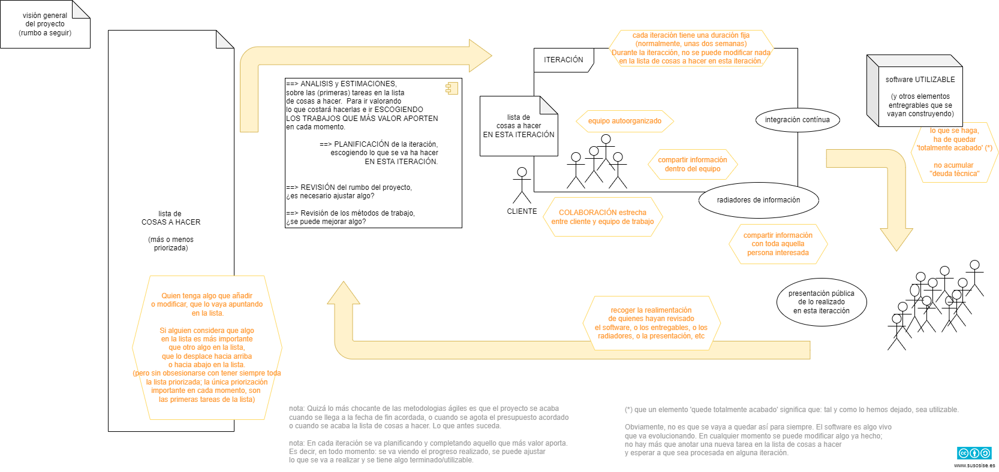
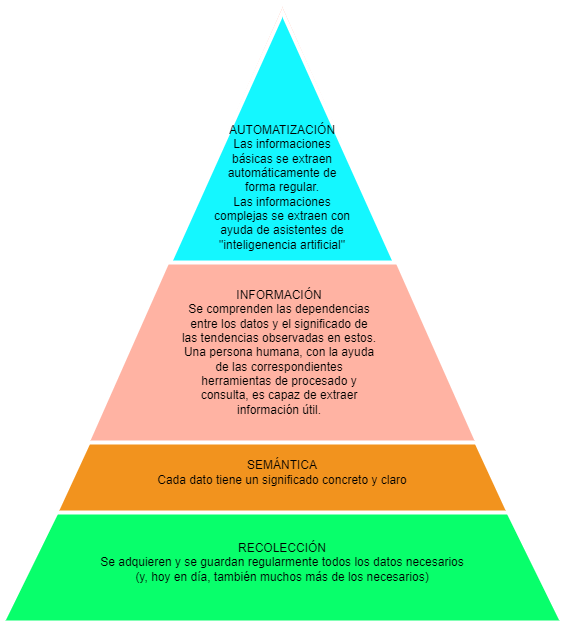

Proyecto Software
“Conoce y utiliza las prácticas establecidas para la profesión.”
Siempre es más productivo invertir tiempo
en buscar y estudiar técnicas probadas y establecidas,
que gastarlo en reinventar de nuevo lo ya conocido.
Aprende, ten curiosidad, mantente actualizado,…
evita dormirte dentro de tu zona de confort.
“Una herramienta ayuda a hacer el trabajo, pero no hace el trabajo.
Es el conocimiento de cómo usar la herramienta lo que hace el trabajo.”
(Aprende a utilizar las herramientas adecuadamente,
para sacar el máximo provecho de ellas.)
Juan Murua Olalde
22/Febrero/2019
8 de septiembre de 2022
Nota: Una copia .pdf de este manual se puede descargar desde www.susosise.es
Nota: El código fuente y el historial de cambios de este documento se puede obtener en
https://bitbucket.org/susosise/proyecto_software/commits/
Herramientas para escribir código fuente y traducirlo al código máquina correspondiente.
En un editor, se suele apreciar el grado y calidad de la asistencia prestada a hora de escribir código en el lenguaje de programación que se vaya a emplear. Ayudas tales como: el coloreado sintáctico, autocompletar sentencias, dar información contextual de las diversas funciones y opciones disponibles en las bibliotecas, facilitar refactorizaciones (por ejemplo: renombrar variables o funciones, extraer trozos de código a su propia función, modificar la signatura de una función,...), etc.
En un compilador, se suele apreciar su velocidad de compilación y el grado de optimización que sea capaz de alcanzar. El grado de optimización, suele ser posible ajustarlo, como mínimo en dos niveles:
Durante la programación (“debug”), se suele compilar sin optimización, generando directamente el código máquina tal cual (para que sea sencillo correlacionarlo con el código fuente).
En el compilado final para su uso en producción (“release”), se tiende a reorganizar y optimizar lo máximo posible el código máquina generado (para obtener el máximo rendimiento en ejecución).
En un enlazador (“linker”), antaño se solia apreciar la flexibilidad que permitiera al combinar entre sí porciones de código máquina generado manualmente desde distintas fuentes. Pero hoy en día el proceso de componer el programa ejecutable final es totalmente automático en la mayoria de ocasiones; por lo que el papel desempeñado por el enlazador tiende a pasar totalmente desapercibido.
nota:
Lo habitual es que estas tres herramientas, junto al depurador, vengan integradas en un IDE (Integrated Development Environment). Dentro del IDE actuan las cuatro como si fueran una única herramienta; siendo mucho más sencillo su uso.
Pero, aun trabajando dentro de un IDE integrado, es conveniente tener en cuenta que son cuatro herramientas separadas que forman una cadena (toolchain). Así se comprenden mejor algunas de las opciones/configuraciones/avisos/… que pueden ir apareciendo.
En los primeros tiempos, cuando se trabajaba directamente desde la línea de comandos, repitiendo manualmente cada ciclo de compilar los distintos módulos y de linkarlos todos para componer el programa. Pronto se llegó a la conclusión de que se requería algún sistema para llevar la cuenta de qué módulo depende de cual y para automatizar el ciclo de compilación-linkado. Uno de los sistemas pioneros fue Make ( https://es.wikipedia.org/wiki/Make).
Más tarde, con el auge de los IDE, cada fabricante de estas herramientas fue introduciendo más o menos su propio sistema; funcionando de forma automática “bajo el capó”. Y los programadores fuimos olvidando que estaban detrás de “ese botón que compila y deja listo el programa para su debugeo o ejecución”.
Últimamente, con el auge del desarrollo multiplataforma, han vuelto a cobrar fuerza
sistemas de automatización portables y más o menos independientes del IDE. Algunos de
los más difundidos hoy en día son:
https://docs.microsoft.com/es-es/visualstudio/msbuild/msbuild
https://maven.apache.org/
https://cmake.org/
Cuando más específica sea la definición de tipos de variables y de los parámetros que acepta una función, más información tendrá el compilador para detectar operaciones ilogicas. Y cuantos más avisos pueda dar al respecto, más problemas futuros se podrán evitar. Cualquier error es más fácil de arreglar si se detecta en tiempo de compilación, que si se detecta en tiempo de ejecución.
En general, es mala idea relajar el nivel de avisos del compilador simplemente “para que no nos moleste” y nos permita utilizar variables de tipo genérico, pasar parámetros de cualquier tipo, utilizar las conversiones por defecto,...
Mejor perseguir justo lo contrario: fijar el nivel más restrictivo y atender cuidadosamente a cada uno de los errores (error) o avisos (warning) que el compilador presente. Atender a los errores porque, obviamente, mientras haya errores no se podrá terminar el proceso de compilación y no se tendrá ningún ejecutable. Atender a los warning porque, aunque no impidan completar el proceso de compilación, pueden ser una advertencia de posibles problemas futuros (igual que el humo suele ser indicador de un posible fuego).
Esta forma de proceder puede parecer una pérdida de tiempo. Sobre todo sabiendo que, en muchas ocasiones, simplemente relajando la sensibilidad del compilador, es posible conseguir que pase por alto errores y termine creando el ejecutable. La tentación es grande, sobre todo cuando somos principiantes y muchos de los errores/warnings nos resultan extraños.
Un consejo importante: Todo el tiempo invertido en investigar acerca de un error o warning es tiempo bien invertido. Nos ayudará a conocer mejor el lenguaje y el sistema sobre el que estamos trabajando. Este conocimiento, progresivamente, nos irá permitiendo escribir mejor código, más robusto y con menos errores/warnings.
La construcción try...catch...finally es muy útil; si se utiliza para lo que fué concebida: tratar posibles situaciones excepcionales que se puedan dar durante la ejecución.
Utilizada indiscriminadamente para lo contrario: para enmascarar cualquier tipo de situaciones excepcionales, simplemente para no “asustar” al usuario o para que los errores “no molesten”. Es totalmente contraproducente.
Una de las reglas básicas al programar es que si algo ha de cascar, que casque lo antes posible y lo más ruidosamente posible,... para poderlo arreglar (o al menos mitigar).
No hay nada más peligroso que casques silenciosos que no se manifiestan,... nadie sabe que han ocurrido,... hasta que los errores se van acumulando y acaban explotando por el lado más imprevisible.
Es importante tener presente los tipos de situaciones excepcionales (fuera de nuestro control) que pueden suceder en cada parte del programa. Esto no significa que se deba programar todo el tiempo de forma defensiva. Casi todo lo que sucede dentro del programa está bajo el control del programa. Pero lo que sucede fuera del programa no está bajo su control y requiere supervisión para no introducir problemas. Puntos tales como las interfaces con periféricos externos o la interacción con el usuario, son posibles puntos problemáticos que merecen ir protegidos dentro de un try...catch.
El mejor indicativo de si es necesario o no poner algo dentro de un try..catch es lo que se vaya a programar en la parte catch:
Es una mala idea poner algo dentro de un try...catch simplemente “por si acaso”, disponiendo un único catch para capturar “cualquier excepción” y con la única acción de guardar el error en un log “para luego revisarlo, si fuera necesario”.
En cambio, un try…catch se justifica plenamente cuando captura situaciones excepcionales concretas; disponiendo de catch específicos para tratar cada una de ellas.
El módulo gestor de disco no tiene información suficiente, no podria hacer nada más allá de reintentar y reintentar la escritura.
Sin embargo entre el gestor de lógica de negocio y el gestor de interface si que podrian hacer algo como por ejemplo: avisar al usuario de que necesita liberar espacio en disco y proponerle un botón para que reintente el guardado una vez haya liberado espacio.
Herramienta para realizar un seguimiento detallado del funcionamiento interno del programa. Facilitando así la localización de errores.
Es importante dominar con fluidez:
la colocación de puntos de parada (fijos, condicionales,...),
el avance selectivo en la ejecución (instrucción a instrucción, función a función, hasta la siguiente parada,...)
y la inspección del contenido de variables.
El depurador permite visualizar lo que realmente está haciendo la máquina.
Seguir detalladamente la ejecución del programa puede resultar tedioso. Ya que la forma mecanico-secuencial de trabajar de la máquina es muy diferente de la forma empirico-paralela de pensar de los seres humanos. Pero muchas veces es necesario “ponerse en el lugar” de la máquina, para saber dónde está ese fallo que se nos escapa.
En ese sentido, yo diria que es hasta provechoso todo el tiempo empleado con el depurador. Nos permite comprender mejor la forma de trabajo de la máquina. (Y, ¿que es programar?... más que decirle a la máquina lo que ha de hacer y cómo queremos que lo haga.) Cuanto más familiaridad tengamos con su forma de trabajar, mejores programas podremos escribir para ella.
Herramienta para ejercitar aisladamente partes del programa y verificar que funcionan según lo esperado.
Suelen permitir la creación de baterias automatizadas de pruebas. Incluyen un interface para lanzar partes de estas baterias y comprobar rápidamente los resultados. Los marcos de pruebas más completos suelen permitir la creación de componentes virtuales (mockups) para reemplazar aquellos componentes costosos de crear e inicializar para cada prueba (por ejemplo, acceso a ciertos servicios en la nube o consultas complejas contra una base de datos).
Estas baterias de pruebas son muy útiles como “red de seguridad” durante los cambios que, inevitablemente, todo software va a tener durante su vida útil. Permiten intervenir dentro del código fuente con una cierta seguridad. Modificar/corregir un código fuente dotado de pruebas es mucho más sencillo que intervenir a ciegas en un código sin pruebas, rezando para no introducir involuntariamente errores durante la intervención.
Durante su escritura, parece que escribir pruebas es perder el tiempo. Que escribir pruebas supone un doble trabajo (escribir la función que hace el trabajo y escribir la prueba que verifica que la función hace lo que se supone que hace). Además, al modificar el código, suele ser necesario revisar también pruebas correspondientes.
Todo ello supone una cantidad de trabajo que se antoja innecesario en ese momento; pero que bien se amortiza en el futuro.
El trabajo extra de escribir pruebas se ve compensado con creces, ya que permite una evolución más segura del software. Modificaciones y refactorizaciones que suelen dar miedo (y tienden a evitarse) sobre códigos sin pruebas; son factibles y seguras en códigos dotados de ellas.
Herramienta para:
Almacenar el código fuente y otros recursos que componen el programa.
Documentar los cambios que se van realizando sobre cualquiera de esos recursos.
Evitar/resolver conflictos cuando varias personas están trabajando conjuntamente.
Saber en todo momento cual es la versión oficial de cada recurso almacenado.
El funcionamiento de estos sistemas gestores suele basarse en el concepto de ‘commit’: acto de almacenar unos cambios en el sistema , junto a la correspondiente explicación que los documenta.
(nota: No todos los cambios tienen la misma importancia, de ahí la necesidad de guardar algún tipo de anotación -metadato- junto a cada cambio; aunque solo sea la fecha/hora y el usuario, que se guarda de forma automática.)
La forma de trabajar suele ser sencilla…:
El aspecto más importante a tener en cuenta es la obligatoriedad de trabajar en pequeños pasos. El peor error que se puede cometer trabajando con un sistema de control de versiones es intentar no guardar nada hasta que “esté totalmente terminado, comprobado y bien comprobado”.
Trabajar durante días o semanas sobre algo y luego pretender guardarlo en el sistema, es camino seguro al desastre.
En sistemas de tipo centralizado estricto, esta situación se detecta rápidamente. Ya que cuando se hace el ‘check-out’ de un recurso para modificarlo, se suele imponer un bloqueo sobre el mismo (el resto de usuarios pueden leerlo, pero no modificarlo). Hasta que se realice el ‘check-in’ correspondiente para liberarlo (bien guardando cambios, o bien sin guardar cambios).
Pero incluso en ese tipo de sistemas, suele haber mecanismos para hacer una copia no controlada del recurso (‘check-out’ sin bloqueo), trabajar sobre ella y, si procede, terminar guardando los cambios en el sistema. (Son las personas las que son dueñas del trabajo que realizan, no el sistema de gestión de versiones.)
Lo que nos vuelve a llevar al punto principal antes citado, un sistema de control de versiones requiere, sí o sí, un cambio en la forma de trabajar: se ha de trabajar en pasos incrementales, almacenando cada paso que se da.
Hemos de tener presente que cada recurso va evolucionando y que sus distintos (pequeños) cambios se han de ir coordinando entre las personas que los están haciendo. Esa es la función del sistema de control de versiones: facilitar la coordinación entre las personas.
En ese sentido, un consejo: al igual que se almacenan cambios que modifican,
también se pueden almacenar cambios que deshacen modificaciones anteriormente
almacenadas. Todos los cambios se van acumulando y el contenido del sistema en un
determinado punto es el resultado de todo el trabajo realizado hasta ese punto.

Para distinguir versiones “de trabajo” de versiones “definitivas”, está la correspondiente explicación de cada ‘commit’/’check-in’. Prácticamente todos los sistemas gestores de versiones tienen algún mecanismo para dar una importancia especial a algunos de esos ‘commit’/’check-in’, dejando claro que “lo que hay en este momento es una versión oficial del proyecto”.
Un típico error de principiante suele ser pretender eliminar todo rastro de algo ya guardado “para que no quede constancia de la equivocaciòn”. Esos intentos son camino seguro al desastre, ya que el sistema de gestión de versiones está diseñado precisamente para evitar eso. Es decir, para evitar que alquien cambie algo sin dejar rastro de lo que ha cambiado.
En caso de almacenar algo con errores, lo mejor es reconocerlo, indicandolo expresa y claramente en los ‘commit’/’check-in’ posteriores que almacenen las correcciones.
Con más razón aún, si tras oficializar algo nos damos cuenta de que es necesario corregir algo en esa versión oficial…: realizamos una nueva oficialización, dejando bien claro que la anterior era un error y que la nueva versión oficial es la buena.
Lo único cierto en cualquier software es que algún día tendremos que volver a él para modificarlo. De ahí la necesidad de poder “leerlo” con fluidez para saber lo que hace.
Como comentaba Donald Knuth en su
artículo1
2
http://www.literateprogramming.com:
“Let us change our traditional attitude to the construction of programs. Instead
of imagining that our main task is to instruct a computer what to do, let us
concentrate rather on explaining to human beings what we want a computer to do.”
traducción: ‘Cambiemos la forma tradicional de encarar la construcción de programas.
En lugar de pensar que consiste en indicar a un ordenador lo que tiene que hacer. Mejor
considerar que consiste en explicar a otras personas lo que queremos que haga un
ordenador.’
Mucho se ha escrito acerca de cual puede ser la mejor manera de documentar un programa. Lo cierto es que es necesario algún tipo de documentación. Incluso para nosotros mismos. Ya que, al cabo de algunos meses o años de trabajar en otros proyectos, se hace difícil acordarse de todos los detalles involucrados en un determinado software. Pero es tarea harto difícil ser disciplinados y documentar adecuadamente todos esos detalles mientras estamos programando.
A lo largo del tiempo, se han intentando diversos métodos de documentar software:
Escribir documentos externos complementarios tales como diagramas de flujo, esquemas UML,…Tienen la ventaja de ser comprensibles para quien no conoce el lenguaje en que se ha escrito el código fuente. Pero tiene la pega de que código y documentos tienden muy facilmente a perder sincronia.
Escribir documentación en forma de comentarios en el propio código fuente. Preferiblemente con una sintaxis tal que permita extraerlos con herramientas automáticas tales como javadoc, Doxygen, XML comments,…para confeccionar documentos externos con ellos. Tienen la ventaja de facilitar la puesta al día de la documentación cuando se modifica el código. Pero tiene la pega de que, al seguir siendo un trabajo manual, requiere disciplina para que código y comentarios no acaben desincronizados.
Código autodescriptivo. No hay mejor manera de evitar documentación desactualizada
que leer directemente el propio código fuente tal cual. Esta lectura se facilita
en gran medida si al programar se presta atención a aspectos tales como:
orquestar una coherente modularización del código, escribir nombres de módulos,
funciones y variables que describan con claridad el papel desempeñado por
cada una de ellas, escribir algún que otro comentario puntual allá donde el
código contenga algún truco o apaño poco evidente,…
De todas formas, conviene tener en cuenta que hay lenguajes con una dificultad
inherente de lectura, como por ejemplo ensamblador. Mientras que otros lenguajes,
como por ejemplo los funcionales, son mucho mas legibles.
Apollo 12 code listing: https://youtu.be/-y37tXoBDx0?t=640
https://cacm.acm.org/magazines/2011/11/138203-ocaml-for-the-masses/fulltext
Programación con contratos (contract-driven programming). Escribiendo contratos
como parte del código fuente. Contratos donde quedan plasmadas las precondiciones
y postcondiciones de cada función. Se permite así que el compilador u otras
herramientas verifiquen formalmente que cada función cumple con las condiciones
de su contrato. A la par que se documenta el comportamiento esperado de
cada función.
https://en.wikipedia.org/wiki/Design_by_contract
https://www.electronicdesign.com/technologies/embedded-revolution/article/21795884/contractdriven-programming-takes-specification-beyond-the-stone-age
Programación con chequeos (test-driven development, TDD). Escribiendo test
unitarios. Test que, por un lado, sirven para comprobar en cualquier momento
que cada función hace lo que se supone que ha de hacer y, por otro lado, sirven
como documentación (al ejercitar los principales casos de uso de cada función,
plasman por escrito cuales son esos casos).
https://en.wikipedia.org/wiki/Test-driven_development
Un comprobador de código suele ser muy útil para verificar la consistencia de este y avisar (“warning”) de posibles futuras fuentes de problemas.
Consiste en una serie de reglas que se van comprobando sobre el código. Reglas que revisan condiciones que, aunque no impiden al código funcionar, pueden ser fuente de problemas. O, como mínimo, indican que algo no esta del todo correcto.
La herramienta suele traer predefinidas algunas reglas, como por ejemplo las que se encargan de avisar sobre construcciones sospechosas en el código: tener declaradas variables que luego no se usan, hacer uso de funciones “deprecated”, repeticiones de partes de código que podrian refactorizarse, típicos posibles fallos que se suelen dar al copiar/pegar/modificar partes de código, ….
Nosotros podemos definir nuestras propias reglas, como por ejemplo las que se encargan de avisar sobre violaciones de las políticas y normas de estilo de la compañia.
Herramienta para medir el rendimiento de las distintas partes del programa. Facilitando así la localización de cuellos de botella.
Estos analizadores suelen “instrumentar” el programa, colocándole pequeñas rutinas adicionales para medir los tiempos de ejecución de sus distintas partes. El informe final del analizador de rendimiento suele ser una lista de tiempo consumido en cada función y bucle de ejecución.
En el complejo mundo del software actual. Es conveniente no limitar el análisis al propio programa en sí. Se ha de tener en cuenta también su alrededor: comunicaciones a través de la red local, acceso a servidores, consultas a bases de datos externas, etc.
Esto puede obligar a utilizar más de una herramienta de análisis de rendimiento. O a repetir los análisis en diversos momentos en el tiempo, para hacerse una idea de cómo afectan los (cambiantes) factores externos al funcionamiento del programa.
El cuello de botella puede estar en cualquier parte del camino seguido por la información a través de todo el sistema. Por eso se hace imprescindible considerar siempre el sistema de forma integral, analizándolo como un todo y no solo estudiando aisladamente aspectos parciales del mismo.
Con la cada vez mayor demanda de servicios digitales. Es cada vez más grande la presión para implementar nuevas funcionalidades en el software. Y más corto el periodo entre lanzamientos (“deployment”) de nuevas versiones.
Esto ha llevado al concepto de “Continuous Deployment”. Con su acompañante habilitante “Continuous Integration”. Dando lugar a lo que se conoce como la estrategia de trabajo ‘CI/CD’.
Esta estrategia de trabajo se apoya en la automatización de todo el proceso:
Una vez escrito, probado y depurado un trozo de código nuevo. Se envia a la rama principal del código fuente. Donde el sistema de integración se encarga de realizar de forma automatizada:
Las comprobaciones estáticas pertinentes, para revisar su adecuación a los estándares de programación adoptados.
Las baterias de test que se hayan programado, para revisar que no se haya roto inadvertidamente el funcionamiento del código ya existente.
Cualquier otra operación que se estime oportuna antes de integrar el nuevo código con el ya existente.
De esta forma se asegura que la rama principal de código es siempre compilable y que el programa resultante se puede utilizar. (Integración Continua, CI)
Cuando se decide lanzar una nueva versión del programa para su uso en producción. El sistema de despliegue se encarga de realizar de forma automatizada:
Las baterias de test que se hayan programado, para revisar que el software se comporta como se espera que lo haga.
El empaquetado adecuado para transferirlo al sistema de producción.
La instalación en el sistema de producción, actualizando el software que estaba corriendo allí.
Cualquier otra operación que se estime oportuna antes de integrar el nuevo código en el sistema de producción que utilizan los usuarios.
De esta forma se asegura que el despliegue se realiza de forma correcta, sin olvidar ningún paso. Además de permitir realizarlo en cualquier momento. (Despliegue Continuo, CD)
Obviamente, si en cualquier operación de las descritas se detectara un problema, el sistema no sigue adelante, deja todo como estaba antes de iniciarse el proceso y avisa a quien corresponda.
La automatización suele contemplarse también en sentido inverso. Para dar la posibilidad de “dar marcha atrás” y revertir todo el proceso si se viera necesario.
En esa línea, suele resultar útil disponer también de algún sistema de monitorización continua de lo que está sucediendo en el uso del sistema de producción. Si un cambio en el software hace que algo deje de funcionar como lo venia haciendo hasta ese momento; la anomalía se puede detectar a tiempo; resolviendo el problema antes de que afecte demasiado a los usuarios.
Todo ello lleva a la fusión/coordinación estrecha entre los que se venían considerando dos departamentos separados en las empresas: Desarrollo y Operaciones. Dando lugar a lo que se conoce como ‘DevOps’
La parte más importante para llegar a esta forma de plantear el proceso, es la adopción previa de ciertos hábitos de trabajo:
Se trabaja de forma incremental, en pequeños pasos (trabajo de un día o dos). Dejando bien terminado (testeado, integrado y funcionando) cada paso antes de comenzar con el siguiente.
La escritura y ejecución de test son parte integral del proceso de desarrollo.
Se almacenan en un sistema de gestión de versiones:
El código fuente.
Las configuraciones de la aplicación.
Las configuraciones del sistema.
Los scripts de compilación, configuración y despliegue.
Se cuida de mantener una arquitectura con el adecuado reparto de tareas, alto encapsulamiento y bajo acoplamiento entre las distintas partes del software y del sistema.
Todo el equipo está involucrado en todo el proceso de desarrollo y despliegue.
La parte tecnológica, las herramientas de automatización, son meramente instrumentales.
Algunos ejemplos ilustrativos de estas herramientas:
https://bitbucket.org/product/es/features/pipelines
https://docs.gitlab.com/ee/ci/
https://github.com/features/actions
https://www.jenkins.io/
https://prometheus.io/docs/introduction/overview/
El editor (escribir código fuente), el compilador (generar programa ejecutable) y el depurador (seguir la ejecución del programa paso a paso) suelen ser herramientas conocidas por toda persona que se dedica a la programación. Ya que sin esas tres, difícilmente se puede programar nada.
Pero hay otras herramientas que también es preciso conocer para ser productivo:
El gestor de versiones (almacenar el código fuente en un repositorio controlado).
El marco de ejecución de pruebas (comprobar que las distintas funciones del programa hacen lo que se supone que deben hacer).
El comprobador de código (avisar del incumplimiento de ciertas reglas o convenciones).
El analizador de rendimiento (visualizar tiempos de ejecución de cada función del programa).
Formas de automatizar las tareas más repetitivas.
Formas de monitorizar el correcto funcionamiento de todo el sistema.
Y, aunque sea obvio, nunca está de más recalcar que cuanto más a fondo se conozcan las herramientas, más productivo se es con ellas.
El tema de la gestión de proyectos es muy fértil y da para muchas discusiones.
El “Santo Grial” es conseguir un proyecto donde sea posible:
Un estudio preliminar con el que determinar objetivos, alcances y presupuestos. Con un grado de precisión suficiente como para firmar los correspondientes contratos de lanzamiento.
Un estudio y planificación detallados. Definiendo con toda claridad lo que se va a realizar (funcionalidades, requerimientos,...), con qué recursos se va a realizar (herramientas, materiales, personas, tiempo, dinero,...) y planes de contingencia para los principales riesgos (previsión de cómo manejar las posibles desviaciones respecto de lo planificado). Con un grado de precisión suficiente como para firmar los correspondientes contratos de ejecución.
Una ejecución cuidadosa y controlada. Con un seguimiento continuo del grado de consecución y del consumo de recursos. Con una gestión eficaz y eficiente de las posibles incidencias que surjan.
Una comprobación rigurosa del resultado final. Para que el cliente pueda aprobarlo y recibirlo. Dando así por entregado y finalizado el proyecto.
Esa es la guia, el ideal, el objetivo maestro que debe marcar el rumbo en toda gestión de proyectos. Es el marco dentro del cual se definen las distintas metodologías, normativas y estandares existentes: CMMI, Métrica 3, PMBOOK (PMI), APM’s Body of Knowledge, RUP, ISO21500, ISO16326, Scrum, etc.
La metodologia tiene su importancia. Pero lo que realmente marcará la vida del proyecto, será el grado de madurez del entorno de trabajo. Madurez determinada por factores tales como:
la cantidad de proyectos similares realizados anteriormente,
el grado de familiaridad con esas experiencias anteriores de las personas participantes en este proyecto ,
la existencia o no de normativas de uso habitual en los campos de trabajo abarcados,
el grado en que es posible hacer valer los contratos firmados,
…
Es decir, no todos los proyectos ni sus circunstancias son iguales. Es necesario conocer el entorno de trabajo concreto de cada caso, para saber qué metodología de gestión de proyecto puede ser más oportuna.
En proyectos software, merece resaltar el hecho de que, en general, se acoplan bastante mal a las metodogias “tradicionales” a las que está acostumbrada la industria. La mayor parte de ellas están pensadas para ser utilizadas en campos de trabajo bastante maduros, donde hay mucha experiencia previa acumulada, existen normativas oficiales de obligado cumplimiento, los requisitos están bastante claros desde el principio y todos comprenden bastante bien los sobrecostes asociados a modificar requisitos sobre la marcha.
Además, la mayoria de proyectos “no-software” suelen entregar un producto concreto; y, por tanto, tienen un final. Sin embargo, cualquier software es algo vivo en constante evolución. Es como si estuvieramos ante toda una serie de proyectos (o mini-proyectos) encadenados.
En mi opinión, para proyectos software son mucho más adecuadas las técnicas
preconizadas por las “metodologías ágiles” ( https://agilemanifesto.org/).

Todo lo descrito en este capítulo se enmarca dentro ese tipo de metodologías ágiles.
nota: Las metodologías ágiles funcionan muy bien en proyectos donde va a trabajar un equipo técnico de menos de diez personas; personas dispuestas a colaborar entre ellas. Con un cliente que también está dispuesto a involucrarse activamente en el proyecto. Proyectos de mayor envergadura, necesitan metodologías más formales.
Al principio, todas las funcionalidades suelen nacer como “desideratas” más que como requisitos formales. Suelen llegar descritas de manera bastante vaga y genérica. Cualquier intento de definir el proyecto de forma completa y detallada antes de ponerse a trabajar está condenado al fracaso. En no pocas ocasiones lo que se pretende construir es la primera vez que se construye y dentro de las herramientas/tecnologias a utilizar hay habitualmente algo que se utiliza por primera vez. Es decir, la incertidumbre en proyectos software es tan alta que cualquier intento de precisar algo a tres o cuatro meses vista, se convierte en un ejercicio de mera adivinación.
La mejor manera de lidiar con esto es aceptar que es así y buscar formas de trabajar con esas incertidumbres. La peor es intentar que no sea así y pretender eliminar las incertidumbres (o, peor aún, “hacer como que las incertidumbres no existen”…).
No será posible definirlo con precisión desde el principio. Pero siempre es posible irlo definiendo progresivamente, a medida que se trabaja sobre ello y se va aprendiendo. Más vale una estimación progresiva, pero realista; que una planificación inicial completa, pero fantástica.
¡Atención!. Todo esto no significa renunciar a una planificación. En todo proyecto es imprescindible trazar una hoja de ruta, fijando un rumbo y unos objetivos claros.
La diferencia de los proyectos software respecto a proyectos en campos más trillados de la ingeniería reside simplemente en la forma de manejar los requisitos y la planificación de tareas:
En un proyecto “tradicional” se trabaja por fases: (1) estudio preliminar (ver la viabilidad del proyecto), (2) estudio detallado (definir todos los requisitos y planificar todo lo necesario, (3) construcción (obtener el producto), (4) verificación (comprobar que el producto cumple los requisitos), (5) entrega y cierre del proyecto.
En proyectos software se trabaja en ciclos iterativos de: (*) revisión de lo realizado / revisión de lo pendiente / seleccionar el trabajo a realizar / trabajar / presentar lo realizado / (*) . Es decir, se va precisando lo que se pretende hacer según se acerca el momento de hacerlo:
El cliente va concretando lo que desea.
El programador va concretando las posibilidades técnicas.
En este proceso de detallado, las funcionalidades “macro” van dividiéndose en
funcionalidades concretas.
Una funcionalidad está lista para ser implementada cuando están claros:
su alcance (lo que se pretende conseguir y lo que no se pretende conseguir),
su funcionamiento interno (cómo se puede conseguir),
su validación (cómo la va a probar el cliente para saber si cumple o no sus expectativas)
Debido a la incertidumbre antes citada, es muy importante trocear lo suficientemente fino como para que cada funcionalidad detallada sea posible el implementarla en cuestión de días. Ponerse a trabajar en algo durante varios meses seguidos, es receta segura para que luego sea necesario hacer un montón de cambios en el trabajo realizado. Mejor trabajar en bloques menores de un mes; con pausas entre bloques para revisar lo realizado y planificar lo siguiente a realizar.
Por ejemplo, en la metodologia Scrum:
Las funcionalidades y tareas que van surgiendo se van anotando en un repositorio común, dominado Product Backlog, al alcance de todos los participantes. Cualquiera puede aportar en cualquier momento, siguiendo las normas que se hayan establecido para hacerlo.
El Product Backlog va ordenado, con las entradas más importantes hacia el principio de la lista y las menos importantes hacia el fondo.
Por ejemplo, usando una lista priorizada en cabeza:
Se escribe cada entrada en una especie de tarjeta. Colocada en una especie de tablón de anuncios. Teniendo facilidad para moverla dentro del tablón.
Cualquiera puede “ir subiendo” aquellas funcionalidades o tareas que crea más importantes y “bajando” aquellas menos importantes.
Haciendolo de forma informal, según cada cual va introduciendo nuevas tarjetas o revisando las tarjetas ya existentes; el efecto final es que, de forma fluida, lo más importante se va situando en una zona y lo menos importante en otra.
Las tarjetas en la zona “menos importante” sólo requieren un vistazo de vez en cuando. Sobre las tarjetas en la zona ”más importante” es donde se ha de centrar la atención. Estas últimas se han de ir reescribiendo, troceando en nuevas tarjetas,... concretando cada vez más el trabajo a realizar.
Por la incertidumbre inherente a los proyectos software, cualquier intento de asignar tiempos precisos a cada tarea acabará convertido en un mero ejercicio de adivinación más que de planificación.
Nota: En caso de estar obligados a dar una estimación con tiempos concretos; por ejemplo, un cronograma Gantt. Es conveniente seguir la metodología de la ‘cadena crítica’ (CCPM, Critical Chain Project Management).
La estimación de trabajos software solo se puede realizar por escalones. Por ejemplo:
trabajo de horas (menos de un día)
trabajo de días (menos de una semana)
trabajo de semanas (menos de un mes)
trabajo de meses (totalmente indeterminado,… pueden ser años)
En este sentido, las metodologias ágiles recomiendan realizar la estimación de costes en grupo. Con una técnica denominada ‘planning poker’: Cada persona dispone de una baraja de cartas de puntuación. Tras comentar el trabajo a realizar, todas lanzan simultáneamente cada una una carta. Si coinciden más o menos todas las puntuaciones, ese será el coste asignado a ese trabajo. Si hay alguna puntuación muy discrepante, se invita a esa persona a explicar su parecer, para contrastarlo con el del resto del grupo; para volver a lanzar las cartas,... hasta alcanzar un consenso.
El truco de esta técnica de ‘planning poker’ reside en que las puntuaciones no se puedan relacionar con horas de trabajo ni nada parecido. Se suelen utilizar series: por ejemplo 0, 1 , 2, 3, 5, 8, 13, 21, 34, 55, 89 o por ejemplo 0, ½, 1, 2, 3, 5, 8, 13, 20, 40, 100. Este tipo de series ayudan a que las discrepancias sean evidentes.
Al igual que el equipo técnico es el único cualificado para determinar el coste de los trabajos. Es el cliente el único cualificado para determinar la importancia de cada funcionalidad o tarea solicitadas.
LLevando el proyecto de forma progresiva e iterativa. Es muy importante que, en cualquier momento, el valor del trabajo completado hasta ese punto sea el mayor posible. Si además se une a esto una integración continua que garantice que lo completado hasta ese punto sea funcional. El cliente siempre tendrá algo útil en todo momento del proyecto.
Dentro del repositorio de funcionalidades a implementar y de tareas a realizar, pronto suele ser necesario poner orden. Pero en una lista en permanente cambio, intentar revisar y priorizar todas las entradas en todo momento es prácticamente imposible.
Intentar ordenar y priorizar todo no será posible. Pero, siempre es posible ir estableciendo pautas progresivamente. De manera informal, las funcionalidades y tareas en la lista pueden irse moviendo “hacia el lado de más importancia” o “hacia el lado de menos importancia”. Lo de un lado, requiere revisiones y atención más frecuente; lo del otro lado, menos frecuente.
Por ejemplo, en la metodologia Scrum:
Las prioridades se aplican en las reuniones para planificar el siguiente SPRINT. En esas reuniones se repasa el Product Backlog (comenzando por la parte superior de la lista) y se escogen las funcionalidades/tareas a trabajar durante ese Sprint concreto.
Una vez arrancado el Sprint, el equipo de trabajo se concentra en lo que está
haciendo. No se permiten replanificaciones ni interrupciones. De ahí que el tiempo
asignado a cada Sprint sea habitualmente de una, dos o tres semanas. Ello no
quita para que se puedan seguir realizando aportaciones al Product Backlog.

Por ejemplo, usando una lista priorizada en cabeza:
Se dispone de una zona especial, con espacio limitado para un cierto número fijo de tarjetas en ella. La cantidad de casillas se determina según la duración del trabajo representado por cada tarjeta y según el tiempo de estabilidad de previsiones que estemos manejando.
Las tarjetas que llegan a esta zona han de colocarse en orden estricto de prioridad. La
misión de esta ‘zona de lanzamiento’ es la de mostrar los trabajos a abordar en breve y en
el orden en que está previsto abordarlos. 
Esta forma de disponer las tarjetas:
Permite visualizar claramente la repercusión que tendrá cualquier alteración o cuña “urgente” que se pretenda introducir. Quien desee introducir algo urgente, ha de poner su tarjeta en la casilla que estime oportuno y, para ello, ha de mover el resto de tarjetas.
Permite que los trabajos se vayan realizando de forma fluida. Quien termina un trabajo y va a por el siguiente, coge siempre la tarjeta que se encuentre en la posición 1 en ese momento. La retira de la zona de lanzamiento y avanza las restantes. Una vez iniciado un trabajo, ese trabajo no se puede interrumpir.
Obviamente, eso implica que cada tarjeta se ha de poder completar en un tiempo razonablemente corto. Un tiempo que vendrá dado por el tiempo de reacción necesario (recordar que la única forma de introducir una cuña urgente es ponerla en la casilla 1 de la ‘zona de lanzamiento’)
También es importante terminar cada tarea, bien terminada, sin flecos sueltos; para no ir acumulando “deudas”. (nota: Si alguna tarea “se tuerce” y no se puede completar, siempre se puede reescribir la tarjeta y volverla a poner en la lista.)
Notas: https://www.atlassian.com/agile/kanban/boards
En aquellos proyectos donde sea necesario establecer un plan concreto de ejecución. Es decir, aquellos proyectos donde tengamos recursos que pueden trabajar en paralelo.
Suele resultar útil el método de la cadena crítica (critical chain):
Realizar un diagrama dibujando las dependencias entre tareas.
Prestando especial atención a:
Tareas que no pueden comenzar hasta que no haya terminado otra previa, porque necesitan de los resultados de esa previa.
Tareas que requieren un mismo recurso; y que, por tanto, no pueden realizarse simultáneamente.
Estimar tiempos de ejecución para cada una de las tareas.
Buscar la cadena de ejecución más larga, el grupo de tareas encadenadas que más tiempo representa. Esa será la cadena prioritaria (cadena crítica).
Subordinar a esa cadena crítica todas y cada una de las demás tareas o
subcadenas de tareas:  nota: Para calcular el tiempo en el colchón de seguridad (buffer). Reducir
a la mitad el tiempo estimado en las tareas de la subcadena y poner el total
de esas mitades en el colchón de seguridad .
nota: Para calcular el tiempo en el colchón de seguridad (buffer). Reducir
a la mitad el tiempo estimado en las tareas de la subcadena y poner el total
de esas mitades en el colchón de seguridad .
nota: No perder de vista que en ningún momento pueden coincidir en el mismo punto de la línea temporal dos tareas que requieran de un mismo recurso.
_pendiente_ de explicar mejor el rationale y elaborar ejemplos concretos para ilustrar bien los principios básicos.
Tiempo y dinero suelen ser los dos principales aspectos a tenerlos controlados en todo momento. Ni el calendario de implementación se puede alargar eternamente; ni los bolsillos del cliente son infinitos.
Igual resulta extraño que estos dos aspectos se consideren solo aquí, en el apartado de seguimiento del progreso; sin haberse citado anteriormente, en el apartado de planificación. Pero la respuesta es sencilla: la volatilidad de requisitos en un proyecto software no permite acordar y cerrar todos los temas desde el principio; por tanto, estos se irán acordando y cerrando progresivamente.
Este es un concepto difícil de explicar al cliente. Pero es necesario hacerle ver que tampoco se está hablando de un contrato “sin reglas”. Sigue siendo perfectamente válido fijar desde el principio un calendario y un presupuesto. La diferencia es que en este caso, las decisiones concretas sobre lo que se va implementando y de cuándo parar de implementar (entregar el producto) se irán tomando progresivamente.
Es importante hacer ver al cliente (y demostrarlo) que en todo momento va a estar bien informado sobre lo que va sucediendo, sobre lo realizado, sobre lo pendiente y sobre los recursos consumidos. Y que va a tener las palancas necesarias para ir gobernando el proyecto.
Obviamente, este último párrafo presupone un cliente implicado en el proyecto.
Un proyecto software suele perseguir entregar una herramienta, una herramienta que el cliente va a utilizar habitualmente en su trabajo. Y este tipo de herramientas es mejor construirlas colaborando codo con codo con quien va a utilizarlas.
La importancia de que todas las partes implicadas estén al tanto de lo que se está haciendo. ⇒ medios sencillos y eficaces para difundir información
La importancia de que todas las partes implicadas se preocupen de acceder a la información de su interés. ⇒ es muy difícil mantener informado a quien no muestra interés alguno por estarlo
Un aforismo: Cuanto más transparente es un entorno, antes se detectan los errores o los malentendidos; y más fácil es corregirlos a tiempo.
Todas las metodologías ágiles disponen de “radiadores de información”: técnicas sencillas para que todas las personas interesadas puedan ver lo que está sucediendo en el proyecto.
Los proyectos software son una bestia diferente. Principalmente por dos motivos:
En la ingenieria de software, en cambio, ese corpus de conocimiento y prácticas establecidas se está comenzando a recopilar; y está aún lejos de ser algo común, compartido por todos. Además, gran parte de los objetos, materiales y principios involucrados en el trabajo del día a día están en constante y acelerada evolución.
Si comparto un objeto con alguien, yo pierdo parte de los beneficios de utilizar ese objeto.
Si un objeto va a ser usado simultáneamente por miles o millones de personas, el coste de producir esos miles o millones de copias del objeto diluye totalmente el coste de diseñar el objeto; además, en cada copia tenemos una oportunidad de mejorar el objeto y los costes de diseñar la mejora se reparten entre todas las copias que vayamos a realizar a partir de ahí.
Modificar algo en un objeto ya construido es dificil y costoso, tanto más costoso cuantas más copias estén construidas y sea necesario actualizar.
Pero el software es una mercancia intangible, con reglas diferentes en ciertos aspectos. Por ejemplo:
Si comparto un programa con alguien, no solo yo no pierdo ninguno de los beneficios de utilizar ese programa, sino que incluso puedo llegar a obtener beneficios adicionales (más bugs son detectados/corregidos, hay más gente cualificada en el uso del programa que puedo contratar en un momento dado,...).
El coste de producir un programa es independiente del número de personas que lo vayan a utilizar; además, cada copia es idéntica y prácticamente sin coste, todo el coste se concentra en el diseño del programa.
Modificar algo en un programa ya construido es sencillo; y, encima, actualizar cualquiera de las copias en uso también es sencillo.
Por tanto, es lógico que la forma de enfocar un proyecto sea diferente en uno u otro campo: enfoque secuencial en los proyectos típicos de otras disciplinas, enfoque iterativo en los proyectos software.
nota: Hablando de diferencias, también hay algunas otras que no afectan directamente a la forma de enfocar proyectos. Pero que también es importante tenerlas en cuenta:
El coste de adquisición de un objeto físico suele ser siempre proporcional a su “tamaño/capacidad. Por ejemplo, una grua capaz de levantar 30 Tn. cuesta más que una capaz de levantar 500 Kg.
El coste de la formación necesaria para manejar un objeto suele ser proporcional a su coste de adquisición. Por ejemplo, es necesario dedicar unos cuantos meses para aprender a pilotar un helicoptero que vale millones de euros; varios días para aprender a conducir un coche que cuesta miles de euros; unas horas para montar una bicicleta que cuesta cientos de euros.
El coste de adquisición de un programa software no tiene relación directa con su “tamaño/capacidad”. Por ejemplo, usamos el mismo procesador de textos para escribir una carta o para redactar un informe de 700 páginas; usamos el mismo software CAD para diseñar un chalet unifamiliar o para diseñar un rascacielos de 70 pisos.
El coste de la formación necesaria para manejar un programa es siempre mucho mayor que el coste de adquirir ese programa. Por ejemplo, es necesario dedicar unos cuantos meses para aprender a utilizar un software de CAD que cuesta miles de euros; varias semanas para aprender a utilizar un procesador de textos que cuesta unos cien euros.
Es importante destacar que el paradigma seguido al programar puede ser independiente del lenguaje de programación utilizado. Un paradigma de programación es simplemente “una forma de hacer las cosas”. Y en (casi) todos los lenguajes se puede hacer (casi) de todo.
Hasta finales de la década de los 90, cada lenguaje tendia a especializarse en un paradigma concreto y solo soportaba específicamente ese. Pero hoy en día (finales de la década de los 10), los lenguajes más populares están tendiendo a implementar mecanismos propios de más de un paradigma. De ahí que sea importante conocer bien los paradigmas; para que el lenguaje no nos confunda cuando permite mezclar construcciones típicas de más de un paradigma en un mismo programa.
En este paradigma, se trabaja directamente con las instrucciones básicas de la plataforma hardware sobre el que va a funcionar el programa.
Habitualmente, estas instrucciones suelen ser bastante limitadas y programar con ellas resulta complicado. Este tipo de programación se utiliza principalmente para escribir compiladores/intérpretes de otros lenguajes de programación de más alto nivel.
El formalismo teórico tras este tipo de programación imperativa es la máquina de Turing.
Tres son las estructuras principales sobre las que se construyen todos programas informáticos:
código en ensamblador:
movl $5, -4(%rbp)
movl $7, -8(%rbp)
movl -4(%rbp), %edx
movl -8(%rbp), %eax
addl %edx, %eax
movl %eax, -12(%rbp)
código en c:
int un_numero, otro_numero, resultado;
un_numero = 5;
otro_numero = 7;
resultado = un_numero + otro_numero;
otra variante del código en ensamblador:
movl $5, -4(%rbp)
movl $7, -8(%rbp)
movl -4(%rbp), %ecx
addl -8(%rbp), %ecx
movl %ecx, -12(%rbp)
código en ensamblador:
movl $3, -4(%rbp)
cmpl $0, -4(%rbp)
jle.L2
addl $1, -4(%rbp)
jmp.L3
.L2:
addl $2, -4(%rbp)
.L3:
movl $0, %eax
código en c:
int numero;
numero = 3;
if(numero > 0)
{
numero = numero + 1;
}
else
{
numero = numero + 2;
}
código en ensamblador:
movl $0, -4(%rbp)
movl $0, -8(%rbp)
movl $1, -12(%rbp)
LBB0_1:
cmpl $6, -12(%rbp)
jge LBB0_2
movl -8(%rbp), %eax
shll $1, %eax
movl %eax, -8(%rbp)
movl -12(%rbp), %eax
addl $1, %eax
movl %eax, -12(%rbp)
jmp LBB0_1
LBB0_2:
movl -4(%rbp), %eax
código en c:
int numero = 0;
int indice;
for(indice = 1; indice < 6; indice++)
{
numero = numero * 2;
}
otra variante del código en c:
int numero = 0;
int indice = 1;
while(indice < 6)
{
numero = numero * 2;
indice++;
}
En este paradigma se hace hincapié en la separación de los distintos procesos que componen el programa. Usualmente, estos procesos se estructuran en bloques de código, funciones y módulos.
El funcionamiento del programa se centra en ir llamando a esos bloques y funciones según se requieran para realizar el trabajo.
función
: una tarea concreta; recibe unos datos (parámetros recibidos), realiza un trabajo y devuelve unos datos (parámetro devuelto).
módulo
: un grupo de funciones relacionadas.

RaizCuadradaPorElMetodoDeNewton.java
package ejerciciosMatematicos;
public class RaizCuadradaPorElMetodoDeNewton
{
public static double CalcularRaizDe(double numero)
{
double EPSILON = 0.001;
double aproximacion = 1.0;
while((Math.abs(aproximacion * aproximacion - numero) / numero) > EPSILON)
{
aproximacion = (aproximacion + (numero / aproximacion)) / 2;
}
return aproximacion;
}
public static void main(String[] args)
{
System.out.println(RaizCuadradaPorElMetodoDeNewton.CalcularRaizDe(2));
System.out.println(RaizCuadradaPorElMetodoDeNewton.CalcularRaizDe(385.23));
}
}
figuras_procedural.py
import math
import turtle
def area_de_un_rectangulo(ladoA, ladoB):
return ladoA * ladoB
def dibujar_un_rectangulo(ladoA, ladoB):
turtle.showturtle()
turtle.forward(ladoA)
turtle.left(90)
turtle.forward(ladoB)
turtle.left(90)
turtle.forward(ladoA)
turtle.left(90)
turtle.forward(ladoB)
turtle.hideturtle()
def area_de_un_circulo(radio):
return math.pi * radio ** 2
def dibujar_un_circulo(radio):
turtle.showturtle()
turtle.circle(radio, 360)
turtle.hideturtle()
main.py
from figuras_procedural import *
if __name__ == "__main__":
print(‘‘El area de un rectangulo de 40x30 es ‘‘
+ str(area_de_un_rectangulo(ladoA = 40, ladoB = 30)))
print(‘‘El area de un circulo de radio 25 es ‘‘
+ str(area_de_un_circulo(radio = 25)))
dibujar_un_rectangulo(ladoA = 40, ladoB = 30)
dibujar_un_circulo(radio = 25)
En este paradigma se hace hincapié en repartir responsabilidades a diferentes actores (objetos). Idealmente cada funcionalidad será responsabilidad de un solo actor.
Estos actores llevan encapsulados en su definición interna tanto los datos (propiedades) como las funciones (métodos) necesarios para llevar a cabo su tarea. Y nada puede acceder a esos datos ni a esas funciones si no es a través de un actor (instancia) del tipo (clase) correspondiente.
El funcionamiento del programa se centra en la colaboración entre esos actores (objetos) para realizar el trabajo.
Podriamos decir que, en un lenguaje OO:
todos los valores son objetos de algún tipo.
todas las operaciones son llamadas a métodos de algún objeto.
clase/instancia
: la clase es la definición de un tipo de objeto y la instancia es un objeto concreto de ese tipo.
encapsulación
: los entresijos interiores de un objeto son internos a él, privados; desde fuera, otros objetos solo pueden acceder a ellos a través de las partes que se hayan definido como públicas.
herencia
: si las definiciones de varios objetos tienen partes comunes a todos ellos, se puede definir un tipo de objeto base con esa parte común y luego definir cada tipo de objeto derivado a partir del objeto base.
polimorfismo
:
Un mismo método (mismo nombre para llamarlo), puede tener varias versiones (recibiendo o devolviendo distintos parámetros).
Diferentes clases (con distintos nombres), pueden tener una parte similar (implementan un interface: tienen una serie de funciones con exactamente la mismas signaturas). Objetos (instancias) de cualquiera de esas clases pueden ser utilizados indistintamente en ciertos usos que requieran utilizar solo esa funcionalidad común.

figuras_oop.py
import math
import turtle
class Rectangulo:
def __init__(self, ladoA, ladoB):
self.ladoA = ladoA
self.ladoB = ladoB
self.color = ""
def get_area(self):
return self.ladoA * self.ladoB
def dibujar(self):
turtle.showturtle()
turtle.forward(self.ladoA)
turtle.left(90)
turtle.forward(self.ladoB)
turtle.left(90)
turtle.forward(self.ladoA)
turtle.left(90)
turtle.forward(self.ladoB)
turtle.hideturtle()
def set_color(self, color):
if color == "rojo" or color == "verde" or color == "azul":
self.color = color
else:
print("El color ha de ser ’rojo’, ’verde’ o ’azul’.")
class Cuadrado(Rectangulo):
def __init__(self, lado):
self.ladoA = lado
self.ladoB = lado
class Circulo:
def __init__(self, radio):
self.radio = radio
def get_area(self):
return math.pi * self.radio ** 2
def dibujar(self):
turtle.showturtle()
turtle.circle(self.radio, 360)
turtle.hideturtle()
def set_radio(self, radio):
self.radio = radio
main.py
from figuras_oop import *
if __name__ == "__main__":
unCuadrado = Rectangulo(ladoA = 25, ladoB = 25)
otroCuadrado = Cuadrado(lado = 25)
unRectangulo = Rectangulo(ladoA = 77, ladoB = 33)
otroRectangulo = Rectangulo(ladoA = 22, ladoB = 44)
print("El area de unCuadrado es " + str(unCuadrado.get_area()))
print("y la de unRectangulo " + str(unRectangulo.get_area())
+ " y del otro " + str(otroRectangulo.get_area()))
print()
unCuadrado.dibujar()
otroRectangulo.dibujar()
unCirculo = Circulo(radio = 5)
print("El area de unCirculo es " + str(unCirculo.get_area()))
unCirculo.set_radio(10)
print("y tras modificar su radio es " + str(unCirculo.get_area()))
print()
unCirculo.dibujar()
Rectangulo.java
public class Rectangulo {
private float ladoA;
private float ladoB;
private String color;
public Rectangulo(float ladoA, float ladoB)
{
this.ladoA = ladoA;
this.ladoB = ladoB;
this.color = "";
}
public float get_area()
{
return ladoA * ladoB;
}
public void set_color(String color)
{
if (color.equals("rojo") || color.equals("verde") || color.equals("azul"))
{
this.color = color;
}
else
{
System.out.println ("El color ha de ser ’rojo’, ’verde’ o ’azul’.");
}
}
}
Cuadrado.java
public class Cuadrado extends Rectangulo
{
public Cuadrado(float lado)
{
this.ladoA = lado;
this.ladoB = lado;
}
}
Circulo.java
public class Circulo
{
private double radio;
public Circulo(double radio)
{
this.radio = radio;
}
public double get_area()
{
return (Math.PI * Math.pow(radio, 2));
}
public void set_radio(double radio)
{
this.radio = radio;
}
}
Main.java
public class Main
{
public static void main(String[] args)
{
Rectangulo unCuadrado = new Rectangulo(25, 25);
Cuadrado otroCuadrado = new Cuadrado(25);
Rectangulo unRectangulo = new Rectangulo(77, 33);
Rectangulo otroRectangulo = new Rectangulo(22, 44);
System.out.println("El area de unCuadrado es " + unCuadrado.get_area());
System.out.println("y la de unRectangulo " + unRectangulo.get_area()
+ " y del otro " + otroRectangulo.get_area());
System.out.println();
Circulo unCirculo = new Circulo(5.0);
System.out.println("El area de unCirculo es " + unCirculo.get_area());
unCirculo.set_radio(10.0);
System.out.println("y tras modificar su radio es " + unCirculo.get_area());
System.out.println();
}
}
En este paradigma se hace hincapié en el tratamiento abstracto de datos. Se utilizan una serie de funciones que actúan sobre unos ciertos datos de entrada para devolver unos nuevos datos de salida. Las propias funciones también pueden ser datos de entrada o de salida de otras funciones, que se encargan de combinarlas.
El formalismo teórico tras este tipo de programación funcional es λ−calculusoπ −calculus
El funcionamiento del programa se centra en el flujo de datos a través de las funciones, para conseguir obtener el resultado deseado.
inmutabilidad
: Al contrario que en el paradigma imperativo, en el paradigma funcional (casi) todas las estructuras de datos son inmutables. Es decir, en lugar de que el programa cambie valores en unas estructuras de datos, en el paradigma funcional el programa procesa unas estructuras de entrada y devuelven otras en su salida.
closure
: conjunto de una función y su entorno.
reducción
(reduction semantics): cualquier “programa” puede irse reduciendo sucesivamente a otro más sencillo, hasta llegar a una ‘forma normal’ que es su resultado.
funciones de primera clase
(first-class functions): una función puede ser “dato” de otra función; es decir, una función puede tener otras funciones entre sus argumentos o una función puede devolver otra función como resultado.
composición de funciones
( ): aplicar primero una función a los argumentos y luego la otra función al resultado de la primera aplicación ( ).
Algunas operaciones básicas:
apply( )
, operación de aplicar una función a un argumento concreto.
map( )
, operación de aplicar una función a todos y cada uno de los elementos de una lista de argumentos individualmente, devolviendo una lista de resultados con el mismo número de elementos.
reduce
, similar a map, solo que la función se aplica sobre todos los elementos secuencialmente y devuelve un resultado con menos elementos o con un solo elemento.
pattern matching
, comparar una expresión contra unos determinados patrones, para sustituirla por otra expresión dada según el patrón con el que coincida.

RaizCuadradaPorElMetodoDeNewton.sc
package ejerciciosMatematicos
object RaizCuadradaPorElMetodoDeNewton
{
def ValorAbsolutoDe(numero: Double) =
if (numero < 0) -numero else numero
//> ValorAbsolutoDe: (numero:Double)Double
def RaizCuadradaDe(numero: Double) =
{
def BucleDeTrabajo(aproximacion: Double): Double =
if (esSuficientementeBuenaLa(aproximacion: Double)) aproximacion
else BucleDeTrabajo(Mejorar(aproximacion))
def esSuficientementeBuenaLa(aproximacion: Double) =
(ValorAbsolutoDe(aproximacion * aproximacion - numero) / numero) < 0.001
def Mejorar(aproximacion: Double) =
(aproximacion + (numero / aproximacion)) / 2
val aproximacionInicial = 1.0
BucleDeTrabajo(aproximacionInicial)
}
//> RaizCuadradaDe: (numero: Double)Double
RaizCuadradaDe(4)
//> res0: Double = 2.000609756097561
RaizCuadradaDe(385.23)
//> res1: Double = 19.62736097049756
}
“Can programming Be Liberated from the von Neumman Style? A Functional Style and
Its Algebra of Programs” . John Backus . ACM Touring Award Lecture, 1977
https://www.google.es/url?sa=t&rct=j&q=&esrc=s&source=web&cd=3&cad=rja&uact=8&ved=2ahUKEwjTm4jd_ZziAhWEz4UKHQvKBs0QFjACegQIAhAC&url=https%3A%2F%2Fwww.thocp.net%2Fbiographies%2Fpapers%2Fbackus_turingaward_lecture.pdf&usg=AOvVaw0-24JgqQJMYv4JVznvQTZw
“Working Hard to Keep it Simple” . Martin Odersky
https://youtu.be/3jg1AheF4n0
“OCaml for the Masses: why the next language you learn should be functional”. Yaron
Minsky . Communications of the ACM, 2011
http://lpsil.u-bourgogne.fr/master1/mi1-tc5/MATH/michelucci/MIGS_2015_16/TEXTES/Why_ML_is_good_minsky.pdf
El nivel más básico de programación de un ordenador es hablándole directamente en su propio lenguaje: ensamblador o algún lenguaje que permita llegar a ese nivel, tal como C o Ada. Este nivel de trabajo se suele utilizar allá donde se necesite aprovechar al máximo las capacidades de una máquina (sistemas embebidos) o allá donde se necesite saber con exactitud lo que está haciendo la máquina (sistemas de misión-crítica)
Pero los humanos necesitamos hablar un lenguaje que nos resulte comprensible a nosotros. Así es que, para un uso general, es preferible usar un lenguaje de más alto nivel. Uno que permita estructurar adecuadamente el código fuente, de tal forma que las personas podamos entender la estructura del programa. Ahí es donde surgen varios paradigmas.
Cada lenguaje suele estar mejor preparado para programar según alguno de esos paradigmas:
programación estructurada: prácticamente cualquier lenguaje moderno...
programación orientada a objeto: C++, C#, Objetive-C, Java, Phyton, JavaScript, PHP, Ruby, Perl,...
programación funcional: Common Lisp, Scala, Scheme, ML, OCaml, F#, Clojure, Haskell,...
Pero prácticamente ningún lenguaje es puro en ese sentido. Sobre todo los lenguajes más populares, que tienden a mezclar construcciones de diversos paradigmas; permitiendo al programador trabajar en uno u otro estilo, según sus preferencias.
De ahí la importancia de conocer los diversos paradigmas. Por lo menos a nivel de saber reconocer las construcciones típicas de cada uno de ellos.
Un solo programa se encarga de todo. Suele ser típico en pequeños sistemas embebidos.
Existe una división de tareas entre una parte que podemos denominar ‘sistema operativo’ y otra parte que es el programa en sí.
El sistema operativo se encarga de interactuar con el hardware y de ofrecer unos servicios básicos de uso común. Servicios tales como el acceso a la CPU (multitarea), a la memoria (paginación), al sistema de almacenamiento de datos, a los periféricos (pantalla, teclado, ratón, impresora,...), a sistemas externos (comunicaciones), a mecanismos de seguridad (autentificación/permisos), etc.
El programa realiza el trabajo concreto para el que ha sido desarrollado. Aprovechando, allá donde le sean útiles, los servicios del sistema operativo.
La división de tareas es más avanzada y ya no está restringida al interior de una sola máquina. Una parte del programa se ubica en otra máquina externa.
Habitualmente,
La parte en la máquina del usuario (cliente) se encarga de interactuar con este.
Y la parte exterior (servidor) se encarga de manejar/almacenar la información.
En cierto modo, se podrian englobar también en esta categoria las ‘aplicaciones web’. En ellas el cliente es un navegador web estándar y el servidor es quien lleva la mayor parte del peso del trabajo a realizar. De esta forma, se ahorran problemas derivados de la instalación/mantenimiento de un programa cliente ad-hoc.
La división de tareas es total. El sistema lo componen multitud de pequeños programas, en una sola o en multitud de máquinas. Cada programa se encarga de una tarea concreta y es autosuficiente para realizarla; ofreciendo sus servicios al resto del sistema.
Obviamente, son necesarios una serie de mecanismos estandarizados para:
buscar el servicio requerido (no se puede llamar a algo que no se sabe que existe o no se sabe dónde está)
hacer uso de él (llamarlo, pasarle los datos/comandos de entrada correspondientes y recoger de él los datos/avisos de salida respectivos)
Los programas de aplicación, hacen uso de ese “universo” de servicios para completar el trabajo que vayan a realizar.
El Santo Grial del software consiste en llegar a algo parecido a los componentes estandares de otras ramas de la ingenieria (tornillos, perfiles, resistencias, condensadores, interruptores diferenciales, reles, aditivos, válvulas, motores, etc.).
Es decir, llegar a tener módulos de software o servicios que podamos obtener directamente “off-the-shelf” (“comprandolos en el mostrador de una tienda”); y utilizarlos tal cual en la construcción de nuestros programas.
Un patrón de programación es la descripción detallada de un elemento software que resuelve un problema de aparición frecuente en la construcción de programas.
Hay bastantes ya identificados, resueltos y documentados. Pero la técnica es también útil si nos encontramos repetidamente con un determinado problema: una vez resuelto, conviene escribir un patrón documentándolo.
Tal y como se describe en el libro de “la banda de los cuatro (GoF, Gang of Four)” (Erich Gamma - Richard Helm - Ralph Johnson - John Vlissides), un patrón se compone de:
Un nombre, algo fácil de recordar y de citar cuando deseamos referirnos al patrón.
Una descripción del problema y del contexto en que suele surgir.
Una descripción de la solución.
Una descripción de las consecuencias derivadas de aplicar la solución en diferentes contextos.
Conocer algunos patrones puede ahorrar mucho tiempo y trabajo cuando surge el problema correspondiente. Pero lo más importante: la solución implementada apoyándonos en el patrón será mucho más robusta que cualesquiera otra que podamos desarrollar por nuestra cuenta.
nota: Un patrón no es algo estático e inmutable. Es simplemente una manera de evitar reinventar la rueda cada vez. Si en alguna de las veces en que se use, se descubre algo que mejore el patrón; es conveniente actualizar el patrón para añadirle esa mejora.
Sirve para actualizar automaticamente varios objetos (los observadores) cuando cambia uno (el observado)
Es útil cuando varios objetos pueden responder a una determinada tarea y no se desea encargar la tarea solo a uno concreto cada vez. La aplicación comunica la tarea a la cadena de objetos, cada uno de ellos la procesa (o no) y la retransmite (o no) al siguiente de la cadena.
Sirve para separar el comando (dar la orden de hacer algo) de la ejecución del mismo (hacerlo). Es útil cuando se ha de implementar una cola|tablón de comandos, un registro de los comandos ejecutados, un mecanismo para deshacer comandos (undo),...
Sirve para almacenar el estado interno de un objeto o sistema en un determinado instante. De tal manera que más tarde se pueda retornar a él si fuera necesario.
Sirve para convertir un interface en otro, facilitando así el trabajo entre objetos que de otra manera serian incompatibles.
Sirve para añadir funcionalidad a un objeto sin alterar la definición estática de este.
Sirve para unificar varios interfaces en uno, facilitando así el uso del subsistema que implementa los interfaces.
Sirve para para controlar el acceso a un determinado objeto, obligando a que todo acceso a él se haga a traves de otro objeto interpuesto (el intermediario -proxy-)
Cuando uno se encuenta repetidamente con un tipo de tarea concreta. Conviene anotar y documentar la solución implementada; para evitar tener que reinventarla la próxima vez que surja.
Si esa anotación es compartida y refinada por muchas personas a lo largo del tiempo. Llega a convertirse en un patrón que refleja la mejor manera de solucionar esa tarea concreta.
El mundo de los algoritmos es muy vasto. Existen multitud de estudios sobre la mejor forma de realizar prácticamente cualquiera de las tareas que ha de realizar un ordenador.
Hace unas décadas, conocer detalladamente estos algoritmos era muy importante para cualquier programador. Solia ser necesario escribirlos uno mismo allá donde fueran necesarios.
Hoy en día, prácticamente todos los sistemas y lenguajes más populares disponen de bibliotecas que implementan (casi)todos ellos. Si no vienen incluidos de serie, en la propia herramienta; casi seguro que se pueden obtener incorporando bibliotecas de terceros.
Pero tanto antes como ahora, es necesario conocer la gama de algoritmos existentes y los principales usos de cada tipo. De tal forma que, ante una tarea concreta, se sepa encontrar la forma más adecuada de abordarla.
nota: A la hora de hablar sobre algoritmos es importante conocer la notación ‘big O’. Se usa para indicar los límites máximo O( ), mínimo Ω( ) y medio Θ( ) de consumo de recursos (memoria, tiempo,...) por parte de un algoritmo. Esto permite comparar el rendimiento de distintos algoritmos con respecto al número de casos a tratar.
Por ejemplo, algoritmos con evoluciones lineales del orden de O(n) son manejables: 1, 2,
3, 4, 5, 6, 7, 8,…, 14, 15,…, 19, 20,…
pero algoritmos con evoluciones exponenciales del orden de O(2n) pronto se
vuelven imposibles: 2, 4, 8, 16, 32, 64, 128, 256, 512,…, 16.384, 32768,…, 524.288,
1.048.576,…
y mucho más con evoluciones combinatorias del orden de O(n!) 1, 2, 6, 24, 120,
720, 5.040, 40.320,…, 87.178.291.200, 1.307.674.368.000,…, 6.758.061.133.824.000,
1,35·E+17,…
Situaciones donde se han de almacenar y organizar datos. Usando criterios de ordenación o de cercania entre ellos. Para luego facilitar la búsqueda de información dentro de esos datos.
Los clásicos mergesort, boublesort,...
Repartir los datos a lo largo y ancho de distintas ramas. De tal forma que luego sea más sencillo encontrarlos siguiendo la rama adecuada en cada caso.
Utilizar unas tablas auxiliares de índices, para disponer de varios ordenamientos dentro de un mismo conjunto de datos. De tal forma que se pueda utilizar el ordenamiento más adecuado en cada caso. Una vez localizados los resultados de la búsqueda, los índices permiten recuperar los datos propiamente dichos.
Almacenar, junto con los propios datos, información acerca de las relaciones entre los ellos (por ejemplo, en forma de triples ‘sujeto-predicado-objeto’). Así es posible procesar de forma automática esa metainformación, utilizando motores de inferencia, para “descubrir” información que no está registrada de forma explícita en el sistema.
Situaciones donde se ha de resolver cierta formulación matemática. Para obtener unos resultados concretos (solución numérica) o para obtener una fórmula concreta (solución simbólica).
Cálculo matricial.
Tener en cuenta que la derivación es: sencilla de realizar en forma simbólica, pero compleja de realizar de forma numérica. Mientras que la integración es al contrario: sencilla de realizar de forma numérica, pero compleja de realizar de forma simbólica.
Muy útiles para aproximar funciones tales como exponenciales, logarítmicas, trigonométricas,... usando funciones polinomiales (sumas y multiplicaciones).
Pueden ser de utilidad si no disponemos de una biblioteca de funciones matemáticas en el sistema donde estemos programando. O si necesitamos optimizar al máximo el uso de ciclos de procesador en sistemas muy limitados (por ejemplo, en pequeños sistemas embebidos).
Muy útiles para analizar la variación/evolución periódica de una serie de datos, tanto desde el punto de vista “temporal” (dato vs. marco temporal de referencia donde evoluciona), como desde el punto de vista “espectral” (frecuencias fundamentales y armónicas con las que se repiten los datos).
Son muy utilizadas en procesamiento de señales, en filtrado de datos, etc.
El típico problema de optimización suele ser:
establecidas unas ciertas relaciones (fórmulas de cálculo de valores) entre las variables intervinientes,
y establecidas una serie de restricciones (mayor que..., menor que…, igual que...) en el rango de valores para algunas de ellas;
obtener el mínimo (o el máximo) valor posible para alguna de ellas.
Cuando no hay forma de obtener directamente la solución de forma analítica o numérica. Se ha de recurrir a técnicas estadísticas para:
Por un lado, saber cuantas posibilidades (combinaciones) de solución podria haber (espacio de estados).
Por otro lado, generar|explorar todas esas posibilidades para encontrar la o las que realmente son soluciones.
Explorar todas las combinaciones posibles, una a una, hasta dar con aquellas que puedan considerarse una solución. Y, de entre ellas, aquella que se considera la mejor solución. Esto suele ser factible en problemas de complejidad “p”. Aquellos en que la cantidad de combinaciones posibles es polinómica respecto a la cantidad de elementos a tratar (n):
logaritmica (del orden de O(log n)),
lineal (del orden de O(n)),
cuadratica (del orden de O(n2)),... .
Por ejemplo, con una evolución O(n*3) la cantidad de combinaciones posibles es: f(0)=0, c(1)=3, c(2)=6, c(3)=9, c(4)=12, c(5)=15, c(6)=18, c(7)=21, ... , c(15)=45, ... , c(50)=150, ...
Pero se vuelve rápidamente imposible en problemas de complejidad “np-completo” (“np-hard”). Aquellos en que la cantidad de combinaciones posibles no es polinomica con respecto a la cantidad de elementos a tratar.
Por ejemplo, con una evolución exponencial (del orden de O(2n)) la cantidad de combinaciones posibles es: c(0)=0, c(1)=2, c(2)=4, c(3)=8, c(4)=16, c(5)=32, c(6)=64, c(7)=128, ... , c(15)=32.768, ... , c(50)=1.125.899.906.842.624, ...
Para este último tipo de problemas se hace imprescindible recurrir a técnicas que permitan llegar a una solución aceptable (aunque puede que no óptima) sin necesidad de explorar todas y cada una de las opciones posibles.
Un espacio de estados que puede representarse de forma arbórea, se puede ir recorriendo pasando por todas las ramas hasta un cierto nivel en cada una en cada paso (anchura) o por ramas completas en cada paso (profundidad).
Existen métodos para limitar esa búsqueda, saltándose estados o pasos en ella según unas ciertas reglas. Normalmente estos métodos reducidos no suelen llegar a la solución más óptima, pero sí que permiten obtener soluciones “suficientemente buenas” para la situación concreta que se está tratando.
Algunos ejemplos de métodos de reducción:
Max-Min, minimax
Alpha-beta prunning
Hill climbing
etc
Reducir el número de estados a explorar|calcular, basándose en conocimientos ya existentes sobre otros problemas parecidos. La solución empírica así obtenida puede ser solo parcial o algo burda; pero lo importante es que sea útil en la situación concreta que se está tratando.
Reducir el número de estados a explorar|calcular, haciendo uso de exploraciones|cálculos parciales estocásticos (probabilísticos). En no pocos casos, se obtienen resultados exactos o muy cercanos a los exactos.
Tienen mecanismos de realimentación que les permiten ir comparando las soluciones que calculan|encuentran con las soluciones correctas que se buscan. En base a esta realimentación, el algoritmo se va autoajustando; guardando los ajustes que mejoran la tasa de aciertos y descartando los que la empeoran.
El periodo inicial de aprendizaje se suele realizar sobre una muestra seleccionada de casos. Siendo muy importante la adecuada selección de los mismos, para evitar la introducción de sesgos no deseados en el sistema.
Tienen mecanismos que les permiten irse modificando a sí mismos de forma aleatória (mutación) o combinacional (reproducción sexual). Contando también con mecanismos para comparar distintas versiones de sí mismos (generaciones) tras las modificaciones; potenciando aquellas que mejoran el algoritmo (lo acercan a los objetivos perseguidos) y relegando aquellas que lo empeoran.
El mundo de los algoritmos (formas de resolver tareas|problemas) es muy vasto. Y se va enriqueciendo día a día.
Es muy posible que la tarea que tengamos en un cierto momento entre manos, haya sido también la tarea a resolver por otras personas en otros momentos.
Y es muy posible que alguna de esas personas haya explorado a fondo las distintas formas de abordarla, dejando escrito cúal es la más eficiente o la más eficaz.
Una referencia para profundizar en algunas de las estructuras de datos y algoritmos más habituales: https://www.programiz.com/dsa
Temas con los que es muy sencillo iniciar una encendida discusión quasi-religiosa entre programadores.
camelCaseParaLosNombres ?
snake_case_para_los_nombres ?
PascalCaseParaLosNombres ?
Hungarian notation (intCantidad, fltPrecio, txtNombre,…),
o nombres normales (cantidad, precio, nombre,…)?
Función {
instrucciones;
} ?
Función
{
instrucciones;
} ?
Función { instrucciones; } ?
tabuladores, para que cada cual elija la distancia de indentado con la que desea ver el código ?
espacios, para que se preserve en todo momento la intención de indentado de quien ha escrito el código ?
teclear lo menos posible ?
que quede lo más claro posible ?
Documentar el programa fuera del código, para que lo puedan comprender hasta las personas que no sean capaces de leer el código. ?
Hacer el propio código lo suficientemente legible, claro y bien estructurado. ?
O usar ambas cosas (Literate Programming), cada cual para lo que es más válida: los comentarios para explicaciones largas/detalladas (la teoria en que se ha basado el enfoque dado al programa) y el propio código para el funcionamiento del programa (lo que este hace realmente). ?
La mayoria de todas estas discusiones se suelen sobrecalentar en exceso. Porque lo que realmente se está discutiendo en muchos casos no son aspectos técnicos, sino más bien gustos personales, costumbres adquiridas, formas de trabajar derivadas de limitaciones propias de las herramientas utilizadas (¡a veces incluso de herramientas usadas en el pasado, cuyas limitaciones ya no están presentes en las herramientas actuales!), etc.
Si surge algo similar en nuestro entorno, hay que intentar reducir el problema a sus aspectos formalmente técnicos:
¿qué es lo que buscamos obtener, cual es la meta?,
¿cómo afecta realmente a esa meta el uso de una u otra manera de trabajar?
Si aún enfocandolo así, la discusión sigue encendida; y es necesario seguir discutiendo. Suele ser conveniente ponerse a analizar (en nuestro fuero interno, no abiertamente; so pena de abrir otra discusión igual o más encendida que la que tenemos entre manos ) aspectos tales como cuánto trabajo extra le podria suponer a cada cual los cambios de forma de trabajar que se están proponiendo; o si todos conocen cómo aprovechar correctamente las herramientas. En el caso de algunas personas participantes en la discusión, es muy posible que ahí resida el motivo de la cerril defensa de su postura. Mitigando la cantidad de trabajo que le supone o explicándole por qué se ve innecesario algo extra cuando ya lo da la herramienta, es posible que se logre sacar a esa persona de su encastillamiento.
(nota: Al valorar la cantidad de trabajo que algo supone para alguien, no perder de vista la subjetividad de la medida. A todos nos cuesta menos hacer aquello que nos gusta y nos cuesta mucho más aquello que nos disgusta. Y no todos tenemos los mismos gustos.)
Para obtener software de calidad…y para ahorrarnos mucho trabajo en el largo plazo…
GIGO (Garbage In, Garbage Out)
Parece de Perogrullo, pero es importante recalcar la imposibilidad de obtener ninguna información sin disponer de datos adecuados y suficientes para obtenerla.
Es imprescindible determinar bien los datos con que se ha de alimentar al sistema para obtener la información o los resultados que se desean obtener del mismo.
Y es imprescindible que esos datos de partida sean correctos.
Otro aspecto importante a tener en cuenta es que, casi siempre, esos datos iniciales suelen requerir de algún tipo de tratamiento previo 1 2 , para adecuarlos al sistema que los va a procesar y para facilitar la obtención de resultados.
Haciendo un diagrama similar al de la pirámide de Maslow, se podria decir que en el tratamiento de datos se dan estos niveles de necesidades a cubrir:

Sin tener asegurados los niveles inferiores, es inútil intentar abordar un determinado nivel. Ya que las carencias previas harán fracasar el proyecto.
KISS (Keep It Simple and Straighforward) (nota: la frase original es Keep It Simple, Stupid!)
DSTCPW (Do the Simplest Thing that Could Possibly Work)
“Everything should be made as simple as possible, but not simpler.”
La parte de un programa con menos bugs, es siempre aquella que no ha sido escrita.
Evitar incluir funcionalidades porque “le gustan al usuario”. Evitar implementar funcionalidades porque “algún día serán necesarias”. Evitar implementar funciones porque “quedan bonitas”. Siempre meditar sobre la razón de ser de cada funcionalidad a implementar. Esforzarse en implementar solo aquello que es realmente necesario en ese momento. Cuanto más simple es algo,... más fácil es de usar, mantener y evolucionar.
YAGNI (You Ain’t Gonna Need It)
Un software es algo vivo, en constante evolución.
No es algo que se construye una vez y luego tiene una larga vida útil durante la cual necesita solo mantenimiento.
Muy al contrario, es algo que se va construyendo y corrigiendo continuamente, a medida que se usa, a lo largo de toda su vida.
En ese sentido, se inscriben dos consejos:
Siempre diseñar y construir el sistema primando la facilidad (y seguridad) de modificación futura. Algunas técnicas muy útiles en este sentido son:
Estructurar correctamente el código, usando nombres claros y descriptivos (aunque sean largos).
El código ha de ser legible (y, de hecho, es recomendable leerlo). En la medida de lo posible, evitar que se necesiten comentarios o documentación externa para entender lo que hace.
Minimizar las dependencias entre módulos/funciones (cada cosa en un solo lugar, un solo responsable para cada funcionalidad), que no sea necesario un hilo de Ariadna para seguir la ejecución del código.
Refactorizar continuamente, para mantener siempre el código claro y coherente.
Escribir y mantener pruebas unitarias para cada uno de los módulos/funciones, son una red de seguridad en la que apoyarse y una fuente adicional de documentación para entender el código.
Evitar pensar de antemano por dónde evolucionará el programa, no preparar codigo “para cuando sea necesario” ni guardar partes descartadas “por si acaso las necesitamos más tarde”. Si ya es difícil planificar la construcción actual del software, mucho más difícil es predecir sus necesidades futuras. El código (y sus recursos asociados) han de incluir sólo aquello que se esté usando, que está vivo, en cada momento.
E, insisto, el ejercicio de refactorizar continuamente es un buen ejercicio para aprender a valorar técnicas de modificación seguras. (nota: Si nos da miedo modificar código que está funcionando, es señal de que lo estamos programando fatal.)
Un sistema informático (hardware y software) es un sistema complejo. ‘Sistema Complejo’ en el sentido de un sistema con propiedades emergentes ( https://es.wikipedia.org/wiki/Sistema_complejo).
En estos sistemas, es donde cobra mucho más importancia que en ningún otro tener disciplina para mantener una cierta organización y separación entre distintos subsistemas. De tal forma que se consiga reducir la cantidad de interacciones a tener en cuenta en un momento dado.
De esa división en subsistemas surge el concepto de interfaz: una forma concreta y claramente definida para interactuar con un determinado subsistema.
La pregunta básica al plantearse cómo dividir un sistema: si se modifica esta parte, ¿obliga o no casi siempre a modificar también esta otra?.
Partes con mucha dependencia una de la otra, han de pertenecer a un mismo subsistema.
Partes con poca dependencia, pueden ir en distintos subsistemas.
Si se consigue llegar a una división en la que (en la mayoria de ocasiones) sea posible modificar internamente un sub-sistema sin afectar a otros, se habrá logrado un sistema lo más robusto/mantenible posible.
Es importante organizar bien el código y lo que hace cada parte del mismo.
Haciendo un símil con un traje: las costuras entre partes han de estar claras y es
necesario prestar especial atención a dónde las ponemos.
En programación, esas “costuras” suelen ser los ‘interfaces’ y las ‘signaturas’ (funciones a
llamar, parámetros a pasar y parámetros a recibir): los contratos que una parte ha de
cumplir para poder utilizar otra parte.
En un código bien organizado, los cambios en una parte han de afectar lo mínimo posible a otras partes. De tal manera que, cumpliendo los contratos establecidos:
Podamos aplicar tests para comprobar cada parte por separado.
Tengamos confianza para modificar una parte sin miedo a romper inadvertidamente otras partes del programa.
Podamos sustituir una parte sin afectar al resto de partes del programa.
Ver más detalles en el capítulo 14 “Organización interna del código” del documento https://www.susosise.es/documentos/Mas_alla_del_IF_y_del_WHILE.pdf
Cinco principios fundamentales en el diseño de software:
Single Responsibility Principle
Open Closed Principle
Liskov Substitution Principle
Interface Segregation Principle
Dependency Inversion Principle
Estos principios fueron recopilados y descritos en el libro “Agile Software Development, Principles, Patters, and Practices”, Robert Martin, Prentice-Hall, 2002.
Cada módulo, clase, función,…ha de tener una sola responsabilidad: ha de hacer una sola
cosa y ha de tener una sola razón para cambiar.
Además, ha de ser autocontenido, conteniendo todo lo necesario para cumplir su
propósito. Un propósito concreto y bien definido.
Este principio fué descrito en el libro “Object-Oriented Software Construction”, Bertrand
Meyer, Prentice-Hall, 1997.
Un módulo o clase ha de estar abierto a ser extendido con nuevas funcionalidades
añadiendo nuevo código, pero ha de estar cerrado a requerir modificaciones en el código
existente cuando se añaden nuevas funcionalidades.
Es decir, la estructura del código ha de ser tal que lleve de forma natural a añadir nuevas
funcionalidades a base de añadir nuevas funciones o clases en lugar de modificando alguna
ya existente.
Este principio fué descrito en el artículo “Data Abstraction and Hierarchy”, Barbara
Liskov, SIGPLAN Notices, May 1988.
Se resume en que: si B es un subtipo de A, instancias de A deberian poderse
substituir por instancias de B sin alterar con ello las propiedades del programa.
Normalmente, este principio se suele plasmar en la definición de interfaces claros,
respetados escrupulosamente por todas clases que los implementan.
De esta forma, un cliente que las utiliza puede trabajar indistintamente con cualquiera
que las implemente.
Ningún cliente debería verse forzado a depender de métodos que no usa.
Un cliente no tiene por qué depender de “superinterfaces” genéricos “válidos para
(casi)todo”. Es mejor que dependa solo de lo justo y necesario para hacer su labor.
Es mejor segregar funcionalidades en diversos interfaces, según casuísticas de necesidades.
Los interfaces deben definirse primero, pensando en los clientes que los usan; e
implementarse después, según corresponda.
Obviamente, los interfaces (y sus implementaciones) evolucionan a medida que
evolucionan las necesidades de sus clientes. Es peligros intentar anticiparse a esa
evolución. Mejor ir construyendo (y refactorizando) el software pensando continuamente
en facilitar su evolución (cambio) futuro.
Módulos de alto nivel (lógica de dominio) no deberian depender de módulos de bajo nivel (detalles tecnológicos), ambos deberian de depender tan solo de abstracciones.
De esta forma un cliente no necesita conocer nada acerca de los detalles internos de implementación de aquello que utiliza.

En la práctica, trabajando en OOP, esto se suele materializar en que cuando una clase que depende de otra:
Declara dicha dependencia en los parámetros de su constructor, en forma de interfaces (representación abstacta).
En el momento de crear una instancia, se pasan al constructor objetos específicos que implementen la correspondiente interfaz.
De esta forma, se puede inyectar fácilmente en el constructor otra implementación
distinta del interfaz; sin necesidad de modificar nada más en el código.
Es decir, se depende de una interfaz (abstracta) y no de una implementación
(concreta).
Además de reducir las dependencias. Esta forma de trabajar tiene la ventaja adicional de que con solo mirar sus constructores, se ven claramente las dependencias que tiene cada clase.
nota: No siempre es necesario tener interface e implementación. Si solo hay una implementación y el interface se limita simplemente a explicitar las funciones que contiene esta, se puede prescindir del interface. Más tarde, si se da el caso de añadir más de una implementación diferente del mismo concepto, es cuando se crearia un interface con el nombre de la implementación original y habria que buscar los nombres adecuados(nombres que reflejen bien las diferencias) para las distintas implementaciones que podrian inyectarse como concretizaciones de ese interface.

Un ejemplo práctico de algunos de los conceptos citados puede verse en
https://bitbucket.org/susosise/hotel/src/main/
Aviso: está en construcción (y, por cierto, aún muy verde, solo empezando), así es que te animo a clonarlo
y mirar de vez en cuando como va avanzando.
Una extensión de los principios SOLID, del desarrollo orientado a objetos, al desarrollo distribuido basado en servicios.
Interface segregation
Deployability
Event-driven
Availability over consistency
Loose-coupling
Single responsibility
Un cliente no tiene por qué utilizar servicios genéricos “válidos para (casi)todo”. En la medida de lo posible, es mejor que solo dependa justo de lo que necesite.
En lugar de un gran servicio “universal”, con multitud de funcionalidades, utilizable por muchos clientes distintos. Es mejor segregar funcionalidades en distintos servicios, según casuísticas de necesidades; teniendo presente que un mismo cliente puede utilizar varios servicios si los necesita.
La forma de empaquetar, desplegar y ejecutarlos, afecta mucho a la flexibilidad en el uso de los servicios. Conviene utilizar metodologias DevOps para automatizar lo más posible esos procesos.
Una arquitectura orientada a servicios da mucha flexibilidad en la evolución del sistema, y los mecanismos de despliegue han de ser acordes para no malograr dicha flexibilidad.
Mejor diseñar los servicios para que puedan utilizarse a través de llamadas asíncronas, colas de mensajes,…en lugar de ser usados de forma síncrona. De esta manera un proceso no tiene por qué estar esperando, bloqueado por otro.
Esto facilita la escalabilidad del sistema, evitando el bloqueo o la caída de todo el sistema por la saturación de alguna parte del mismo.
La contrapartida de utilizar servicios de forma asíncrona, es que no siempre se puede garantizar plenamente la consistencia e integridad del sistema.
Las transacciones tradicionales son complejas de implementar en un entorno distribuido. De hecho, si no es posible completar toda la secuencia de operaciones de una transacción, se suele tener que recurrir a llamar a los respectivos servicios opuestos para deshacer lo realizado por los servicios llamados previamente. Y en ese ínterin, el sistema puede estar inconsistente.
Pero, dentro de lo que sea admisible, merece la pena diseñar el sistema para permitir esta inconsistencia.
Cada servicio ha de poder ofrecer sus servicios, valga la redundancia, de forma independiente o con el mínimo de dependencias posibles respecto de otros servicios.
Cada servicio ha de tener una sola responsabilidad, ha de hacer una sola cosa y ha de tener una sola razón para cambiar.
Cada servicio no ha de ser demasiado “grande”, pero tampoco demasiado “pequeño”. Ha de contener la cantidad justa de funcionalidad, representando una operación coherente, pero sin que sea necesario llamar a multitud de servicios para realizar el trabajo que se desee hacer en un momento dado.
Estos son platos que desde la cocina de este restaurante pensamos han salido mejor. Pero no tienen por qué coincidir con los gustos gastronómicos del comensal. Así es que para eso está el resto de la carta del restaurante,…, las cartas de otros restaurantes,…o lo que el comensal quiera cocinar por sí mismo…
refactorizar = cambiar y reescribir el código fuente, sin cambiar nada de lo que hace (sin alterar su funcionalidad).
Cada vez que detectemos que algo podria estar mejor escrito,…
es el momento de reescribirlo.
Si un cambio en una parte pide a gritos realizar más cambios en otras partes,…
hacer en ese momento los cambios que se estimen oportunos.
Si una parte está quedando obsoleta,…
renovarla aplicando las nuevas tecnologias que sustituyen a las obsolescentes.
La refactorización es una labor “de jardineria”, se trata de ir cuidando continuamente de “las malas hierbas” y de los pequeños detalles. Si no se lleva a cabo esta labor continuada de mantenimiento. El jardín luce estupendamente justo tras haberlo replanteado todo nuevo, pero va degenerando poco a poco con cada modificación puntual que se le haga. Hasta llegar a un punto donde es necesario otro replanteo completo para recuperarlo.
Una aplicación software se va descubriendo/definiendo paso a paso, funcionalidad a funcionalidad.
Una vez tienes algo bastante claro y con una primera versión mas o menos funcionando, es cuando te das cuenta de los “errores/chapuzas/concesiones/apaños” realizados. Ese es un buen momento de ponerse a ’refactorizar’, para limar en la medida de lo posible esas chapuzas y para mejorar la mantenibilidad/extensibilidad/adaptabilidad de lo realizado.
Una vez puesta en producción una versión, la aplicación sigue viva y va evolucionando según las necesidades.
A la hora de modificar algo existente o añadir algo nuevo, a veces sueles caer en la cuenta de que si previamente realizas ciertos cambios “colaterales”, las modificaciones serian más sencillas y seguras. Ese es un buen momento de ponerse a ‘refactorizar’, para ir mejorando el producto y evitar su “anquilosamiento”.
Si el código dispone de los suficientes test unitarios como para detectar rápidamente alteraciones de funcionamiento no deseadas, la refactorización será mucho más segura.
En caso de “romper algo sin querer”, los test alertan rápidamente de efectos colaterales indeseados. De esta forma, los test van guiando el trabajo por la forma menos intrusiva/peligrosa de modificar el código.
Como ya se ha comentado en la sección anterior, desarrollar (incorporar nuevas funcionalidades) o refactorizar (realizar cambios sin afectar al comportamiento existente), es mucho más seguro si tenemos los suficientes “programillas” internos de test como para comprobar rápidamente si se ha visto alterado o no el comportamiento de lo ya existente.
Suelen distinguirse tres niveles de comprobación:
unit tests → dentro del propio código de cada aplicación, estos tests comprueban sus distintos módulos, objetos, funciones,…. Pueden emplear “mocks” para sustituir partes (o aplicaciones o sistemas externos completos) que resulten costosas de instanciar.
integration tests → dentro del entorno de desarrollo, estos tests comprueban la interacción entre distintas aplicaciones. Pueden emplear “mocks” o sistemas más “livianos” para sustituir aquello que resulte costoso de poner en marcha justo para ejecutar los test.
end-to-end tests → estos test realizan comprobaciones con todas las aplicaciones y sistemas reales, tal y como irán en el entorno de producción. Obviamente, son los más costosos de implementar y de llevar a cabo.
Como regla general, cualquier cambio o ampliación es mucho más segura si se dispone de test.
Es muy recomendable incorporarlos en el programa y en el sistema desde el principio. Todo software tiene multitud modificaciones a lo largo de su vida útil. La estrategia de test ha de ser algo integral al desarrollo del mismo.
Idealmente, todas y cada una de las funcionalidades deberian de tener su propia bateria de test automatizados.
En ese sentido, la corriente de programación TDD (Test Driven Development) insta a que se implemente primero el test y luego la funcionalidad. Se asegura así que todas las partes del sistema sean testeables, y que no queda en el tintero ninguna funcionalidad sin testear.
Trabajar con funcionalidades concretas en cada iteración. Seleccionar de la ‘lista general de funcionalidades’ aquellas que aporten más valor al cliente. Seleccionar un volumen de trabajo apto como para completar la iteración en un par de semanas. (nota: completar una funcionalidad es dejarla funcionando, totalmente operativa)
En cada iteración: bosquejar esqueleto, bosquejar arquitectura, bosquejar tests, debugear, refactorizar, rellenar esqueleto, rellenar tests, debugear, refactorizar, pagar deuda técnica, debugear, refactorizar, preparar interfaces con el mundo exterior, debugear, refactorizar, presentar resultado al usuario, recibir realimentación y reflexionar sobre lo realizado, corregir/ajustar, debugear, refactorizar,...
Repetir iteraciones hasta que se complete el producto, se agote el tiempo o se agote el presupuesto. (nota: En los dos últimos casos, si se han seleccionado correctamente las funcionalidades en cada iteración, tendremos operativa solo parte del producto; pero esa parte será la más importante y la que más valor aporta al cliente.)
…respeta en su totalidad las especificaciones de ese estandar. Seguro que, en algún momento, alguien que conozca el estandar asumirá que así lo has hecho.
Si vas a realizar una implementación parcial, “porque con esto nos es suficiente y no necesitamos más que esto”. Nunca lo llames con el nombre estandar. Deja claro que has usado algo “inspirado” en el estandar pero no el estandar tal cual.
Un ejemplo práctico: si en tu programa lees o escribes archivos XML como si fueran simples cadenas de texto; sin utilizar un verdadero parser XML. No digas que tu programa usa archivos XML, ni pongas la extensión .xml a los archivos; mejor aún, tampoco uses etiquetas entre corchetes <>; sino entre llaves u otro delimitador. Así nadie provocará errores en el sistema por suponer que está trabajando con auténtico XML y, por ejemplo, añada libremente nuevas etiquetas o use etiquetas con igual nombre en distintos niveles dentro de la jerarquia del esquema XML.
Cuando nos enfrentamos a un sistema nuevo por primera vez, un consejo: empezar a explorar el sistema centrandonos en conseguir una versión funcional de lo que se suele denominar un “Hello, world” (un sistema mínimo). Evitar comenzar a trabajar directamente en lo que hemos de hacer con sistema (el trabajo real que nos han encargado).
Es decir, primero aprender las bases del nuevo sistema construyendo una sencilla (pero completa) aplicación con él. El construir una sencilla aplicación que funcione nos permite:
por un lado, permite aprender los detalles básicos necesarios;
por otro lado, permite verificar que el sistema está correctamente instalado y configurado.
Algunos ejemplos de lo que se entiende por construir un “Hello, world”: (nota: aquí solo se ha puesto parte del código, a modo de ejemplo, pero realmente hay que tener en cuenta también todos aquellos elementos detrás del código que permiten que este funcione: la configuración del editor/compilador/enlazador, las bibliotecas, el hardware, etc.)
⇒ Visualizar la famosa frasecita, programando en lenguaje C
#include <stdio.h>
int main()
{
printf("Hola, mundo.' n");
return 0;
}
⇒ Visualizar la famosa frasecita, programando en lenguaje C++
#include <iostream>
int main()
{
std::cout << "Hola, mundo." << std::endl;
return 0;
}
$' Rightarrow$ Visualizar la famosa frasecita, programando en lenguaje Python
print("Hola, mundo.")
⇒ Algo un poco más completo: leer dos números y visualizar su suma en lenguaje c
#include <stdio.h>
int main()
{
int primer_numero;
printf("El primer número: ' n");
scanf("%i", &primer_numero);
int segundo_numero;
printf("El segundo número: ' n");
scanf("%i", &segundo_numero);
int resultado;
resultado = primer_numero + segundo_numero;
printf("La suma de %i y %i es %i ' n", primer_numero, segundo_numero, resultado);
return 0;
}
⇒ Algo un poco más completo: leer dos números y visualizar su suma en lenguaje c++
#include <iostream>
int main()
{
int primer_numero;
std::cout << "El primer numero: " << std::endl;
std::cin >> primer_numero;
int segundo_numero;
std::cout << "El segundo numero: " << std::endl;
std::cin >> segundo_numero;
int resultado;
resultado = primer_numero + segundo_numero;
std::cout << "La suma de " << primer_numero << " y " << segundo_numero
<< " es " << resultado << std::endl;
return 0;
}
⇒ Algo un poco más completo: leer dos números y visualizar su suma en lenguaje java
package experimento_java;
import java.util.Scanner;
public class Main
{
public static void main()
{
Scanner lectorDeTeclado = new Scanner(System.in);
Integer primerNumero;
System.out.println("El primer numero: ");
primerNumero = lectorDeTeclado.nextInt();
Integer segundoNumero;
System.out.println("El segundo numero: ");
segundoNumero = lectorDeTeclado.nextInt();
lectorDeTeclado.close();
Integer resultado;
resultado = primerNumero + segundoNumero;
System.out.println("La suma de " + primerNumero + " y " + segundoNumero
+ " es " + resultado);
}
}
⇒ Algo un poco más completo: leer dos números y visualizar su suma en lenguaje python
def PedirYSumarDosNumeros():
primerNumero = input("El primer numero: ")
segundoNumero = input("El segundo numero: ")
resultado = primerNumero + segundoNumero
print("La suma de " + str(primerNumero) + " y " + str(segundoNumero)
+ " es " + str(resultado))
PedirYSumarDosNumeros()
⇒ Conectar un LED a una placa Rasberri Pi y hacer que parpadee: 
⇒ Dibujar un par de líneas y un texto en el pipeline gráfico 2D de WPF: 
using System.ComponentModel;
using System.Windows;
using System.Windows.Media;
namespace zz_pruebas_y_experimentos
{
class v_Dibujante2D : INotifyPropertyChanged
{
public v_Dibujante2D()
{
PrepararPipelineGrafico();
Dibujar();
}
private GeometryGroup _entesADibujarEnNegro;
private GeometryGroup _entesADibujarEnNaranja;
private GlyphRunDrawing escritorVerde;
private DrawingImage _dibujo;
public DrawingImage dibujo { get { return _dibujo; } }
private void PrepararPipelineGrafico()
{
DrawingGroup dibujantes = new DrawingGroup();
dibujantes.Transform = new ScaleTransform(scaleX: 1, scaleY: -1, centerX: 1, centerY: 0.5);
_entesADibujarEnNegro = new GeometryGroup();
GeometryDrawing dibujanteNegro = new GeometryDrawing();
dibujanteNegro.Geometry = _entesADibujarEnNegro;
dibujanteNegro.Brush = Brushes.DarkGray;
dibujanteNegro.Pen = new Pen(Brushes.Black, thickness: 3);
dibujantes.Children.Add(dibujanteNegro);
_entesADibujarEnNaranja = new GeometryGroup();
GeometryDrawing dibujanteNaranja = new GeometryDrawing();
dibujanteNaranja.Geometry = _entesADibujarEnNaranja;
dibujanteNaranja.Brush = Brushes.DarkOrange;
dibujanteNaranja.Pen = new Pen(Brushes.Orange, thickness: 3);
dibujantes.Children.Add(dibujanteNaranja);
DrawingGroup escritores = new DrawingGroup();
escritorVerde = new GlyphRunDrawing();
escritorVerde.ForegroundBrush = Brushes.Green;
escritores.Children.Add(escritorVerde);
DrawingGroup artistasGraficos = new DrawingGroup();
artistasGraficos.Children.Add(dibujantes);
artistasGraficos.Children.Add(escritores);
_dibujo = new DrawingImage();
_dibujo.Drawing = artistasGraficos;
}
public void Dibujar()
{
_entesADibujarEnNegro.Children.Clear();
_entesADibujarEnNaranja.Children.Clear();
_entesADibujarEnNegro.Children.Add(new LineGeometry(new Point(0, 0), new Point(500, 500)));
_entesADibujarEnNaranja.Children.Add(new LineGeometry(new Point(500, 0), new Point(0, 500)));
escritorVerde.GlyphRun = PrepararTexto(texto: "este es el centro", origen: new Point(250, 250), tamainoDeLetra: 30);
NotifyPropertyChanged("dibujo");
}
private GlyphRun PrepararTexto(string texto, Point origen, double tamainoDeLetra)
{
Typeface tipoDeLetra = new Typeface(fontFamily: new FontFamily("Arial"),
style: FontStyles.Normal,
weight: FontWeights.Normal,
stretch: FontStretches.Normal,
fallbackFontFamily: new FontFamily("Courier New"));
GlyphTypeface tipoDeLetraParaEscribir;
if (!tipoDeLetra.TryGetGlyphTypeface(out tipoDeLetraParaEscribir))
{
throw new System.InvalidOperationException("No se ha encontrado el tipo de letra indicado.");
}
List<ushort> caracteresAEscribir = new List<ushort>();
List<double> espaciosAAvanzarConCadaCaracter = new List<double>();
foreach (char caracter in texto)
{
ushort codigoDelCaracter = tipoDeLetraParaEscribir.CharacterToGlyphMap[caracter];
caracteresAEscribir.Add(codigoDelCaracter);
double anchuraDelCaracter = tipoDeLetraParaEscribir.AdvanceWidths[codigoDelCaracter];
espaciosAAvanzarConCadaCaracter.Add(anchuraDelCaracter * tamainoDeLetra);
}
return new GlyphRun(glyphTypeface: tipoDeLetraParaEscribir ,
bidiLevel: 0,
isSideways: false,
renderingEmSize: tamainoDeLetra,
glyphIndices: caracteresAEscribir,
baselineOrigin: new Point(origen.X, -origen.Y),
advanceWidths: espaciosAAvanzarConCadaCaracter,
glyphOffsets: null,
characters: null,
deviceFontName: null,
clusterMap: null,
caretStops: null,
language: null);
}
public event PropertyChangedEventHandler PropertyChanged;
private void NotifyPropertyChanged(string propertyName)
{
if (PropertyChanged != null)
{
PropertyChanged(this, new PropertyChangedEventArgs(propertyName));
}
}
}
}
⇒ Dibujar un par de mallas triangulares 3D en el pipeline gráfico de WPF:

using System.ComponentModel;
using System.Windows.Media;
using System.Windows.Media.Media3D;
namespace zz_pruebas_y_experimentos
{
class v_Dibujante3D : INotifyPropertyChanged
{
public v_Dibujante3D()
{
PrepararPipelineGrafico();
Dibujar();
}
private GeometryModel3D _entesConMaterialAzul;
private MeshGeometry3D _mallaDeTriangulosAzules;
private GeometryModel3D _entesConMaterialVerde;
private MeshGeometry3D _mallaDeTriangulosVerdes;
private Model3DGroup _mundoVirtual;
public Model3DCollection elementosDelMundoVirtual { get { return _mundoVirtual.Children; } }
private void PrepararPipelineGrafico()
{
_mundoVirtual = new Model3DGroup();
_entesConMaterialAzul = new GeometryModel3D();
_mallaDeTriangulosAzules = new MeshGeometry3D();
_entesConMaterialAzul.Geometry = _mallaDeTriangulosAzules;
_entesConMaterialAzul.Material = new DiffuseMaterial(new SolidColorBrush(Colors.Blue));
_entesConMaterialAzul.Transform = new Transform3DGroup();
_mundoVirtual.Children.Add(_entesConMaterialAzul);
_entesConMaterialVerde = new GeometryModel3D();
_mallaDeTriangulosVerdes = new MeshGeometry3D();
_entesConMaterialVerde.Geometry = _mallaDeTriangulosVerdes;
_entesConMaterialVerde.Material = new DiffuseMaterial(new SolidColorBrush(Colors.Green));
_entesConMaterialVerde.Transform = new Transform3DGroup();
_mundoVirtual.Children.Add(_entesConMaterialVerde);
AmbientLight luzAmbiente = new AmbientLight(ambientColor: Colors.White);
_mundoVirtual.Children.Add(luzAmbiente);
DirectionalLight luzDireccional = new DirectionalLight(diffuseColor: Colors.White, direction: new Vector3D(1,1,-1));
_mundoVirtual.Children.Add(luzDireccional);
}
public void Dibujar()
{
DibujarEnteAzul();
DibujarEnteVerde();
NotifyPropertyChanged("elementosDelMundoVirtual");
}
private void DibujarEnteAzul()
{
_mallaDeTriangulosAzules.Positions.Clear();
_mallaDeTriangulosAzules.TriangleIndices.Clear();
_mallaDeTriangulosAzules.Normals.Clear();
for (int i = 0; i < 15; i = i = i + 3)
{
double incremento = (i / 30);
_mallaDeTriangulosAzules.Positions.Add(new Point3D(-0.5 + incremento, 0 + incremento, 0 + incremento));
_mallaDeTriangulosAzules.Positions.Add(new Point3D(0.5 + incremento, 0.5 + incremento, 0.3 + incremento));
_mallaDeTriangulosAzules.Positions.Add(new Point3D(0 + incremento, 0.5 + incremento, 0 + incremento));
_mallaDeTriangulosAzules.TriangleIndices.Add(i + 0);
_mallaDeTriangulosAzules.TriangleIndices.Add(i + 1);
_mallaDeTriangulosAzules.TriangleIndices.Add(i + 2);
_mallaDeTriangulosAzules.Normals.Add(new Vector3D(0, 0, 1));
_mallaDeTriangulosAzules.Normals.Add(new Vector3D(0, 0, 1));
_mallaDeTriangulosAzules.Normals.Add(new Vector3D(0, 0, 1));
}
}
private void DibujarEnteVerde()
{
_mallaDeTriangulosVerdes.Positions.Clear();
_mallaDeTriangulosVerdes.TriangleIndices.Clear();
_mallaDeTriangulosVerdes.Normals.Clear();
_mallaDeTriangulosVerdes.Positions.Add(new Point3D(-0.2, 0, 0));
_mallaDeTriangulosVerdes.Positions.Add(new Point3D(0.2, 0.2, 0.5));
_mallaDeTriangulosVerdes.Positions.Add(new Point3D(0, 0.2, 0));
_mallaDeTriangulosVerdes.TriangleIndices.Add(0);
_mallaDeTriangulosVerdes.TriangleIndices.Add(1);
_mallaDeTriangulosVerdes.TriangleIndices.Add(2);
_mallaDeTriangulosVerdes.Normals.Add(new Vector3D(0, 0, 1));
_mallaDeTriangulosVerdes.Normals.Add(new Vector3D(0, 0, 1));
_mallaDeTriangulosVerdes.Normals.Add(new Vector3D(0, 0, 1));
}
public event PropertyChangedEventHandler PropertyChanged;
private void NotifyPropertyChanged(string propertyName)
{
if (PropertyChanged != null)
{
PropertyChanged(this, new PropertyChangedEventArgs(propertyName));
}
}
}
}
Una cosa es el formato de almacenamiento interno o de operación interna. Que puede ser uno concreto, fijo.
Otra cosa es el formato operativo de entrada/salida cara al usuario (personas u otros programas). Que debería permitir introducir o presentar datos en el formato habitual para ese usuario.
recomendación: Conocer bien y utilizar siempre los mecanismos que el sistema o lenguaje de programación tengan para lidiar con “locales” (Localization, L12n)
nota: relacionado con esto, están también los mecanismos para lidiar con “idiomas” (Internationalization, I18n)
Una cosa es el formato de almacenamiento interno o de operación interna. Que puede ser en un juego de unidades concreto, fijo, para evitar andar haciendo conversiones de forma continua.
Otra cosa es el formato operativo de entrada/salida cara al usuario (personas u otros programas). Que debería permitir introducir o presentar datos en cualquiera de las unidades de medida válidas contempladas por nuestro programa. (Mejor aún si se permite al usuario definir nuevas unidades de medida y sus respectivos factores de conversión respecto de la unidad base interna.)
recomendación: Llevar siempre cada cantidad como una tupla (número, unidad de medida). Tener solo un número y dar “por supuesta” una determinada unidad de medida…es muy peligroso.
aviso: Cuidado con los redondeos en las conversiones, pueden dar lugar a totales inconsistentes respecto de sus desgloses. Sobre todo cuando se convierte/redondea la presentación de cifras, pero se hacen los cálculos sobre cifras sin convertir/redondear.
una sugerencia interesante: https://www.codeproject.com/Articles/611731/Working-with-Units-and-Amounts
“códigos identificativos inteligentes”: códigos donde el propio código identificativo embebe dentro de sí información relativa a aspectos varios tales como: pais de procedencia, lote, familia de producto,...
Antaño eran necesarios. La compacticidad de la información es importante si se trabaja, por ejemplo, con formularios en papel, códigos de barras lineales o pantallas de ordenador de 80x24 caracteres.
Pero hoy en día, manejando directamente datos digitales con códigos QR o trabajando con pantallas gráficas de alta resolución. Es mejor reservar un código para garantizar la identificación unívoca del elemento codificado; aislandolo de otros usos. Es más, en los casos en que haya varias formas de identificación, es conveniente disponer de diversos campos separados donde almacenar cada código y luego tener índices relacionando los diversos códigos.
Los códigos identificativos no es necesario que vayan en ningún orden ni que sean correlativos; lo único importante es que sean únicos.
Cada elemento “nace y muere” con su propio código; no se reutilizan códigos.
Es importante realizar una clara distinción entre:
Los códigos “de uso” visibles (por ejemplo: CodigoDeArticulo, CodigoDeArticuloSegunProveedorX, CodigoDeArticuloEnAlmacenIntermedio, CodigoDeArticuloEnPaisX, etc.), son igual a cualquier otra descripción relativa al elemento. Los podemos tratar como un campo más en la tabla.
Los códigos “técnicos” internos (por ejemplo: campos claves en una base de datos), utilizados para identificar elementos al recuperarlos/modificarlos y para relacionar tablas entre sí.
Es importante que los elementos en nuestro programa se manejen con un código identificador interno oculto. Y que los usuarios utilicen otro u otros códigos para referirse a ellos tanto al teclearlos como al mostrarlos en pantalla, en listados,...
Hacerlo de esta forma nos permite, por ejemplo:
Recodificar artículos (ID visible), sin afectar a históricos o a otros puntos de la operatoria interna (ID interno).
Mantener fácilmente códigos alternativos equivalentes (ID para un pais, ID para proveedor, ID para cliente,…). Refiriendose todos ellos a un mismo código interno único (ID interno), en cualquier momento de pueden crear o eliminar según se necesite.
En organizaciones grandes, donde para un mismo propósito se vayan dando códigos en distintas partes de la organización. Es imperativo reservar una parte del código (un prefijo) para poder asignar a cada parte un “trozo” del espacio de códigos posibles .
Es decir, cada parte se convierte en “autoridad única dadora de códigos” para su “trozo”. De esta forma, la responsabilidad de no duplicidad se puede distribuir entre las partes, a la vez que se aisla el peligro dentro de cada una de las partes.
Trabajando con los diez dígitos naturales 0,1,2,....,7,8,9 ⇒ 10 caracteres, se dispone de 10n códigos posibles. Por ejemplo, con códigos de 6 números de longitud, se pueden identificar 106 = 1,000,000 de elementos.
truco: Los códigos numéricos deben comenzar por una letra, para evitarnos problemas con los ceros a la izquierda.
Por ejemplo, códigos tales como: 234987, 8273462, ... no dan problemas; pero 003487, 000023,.... pueden plantear problemas (por ejemplo, en una hoja Excel; que se “come” los ceros a la izquierda) Poniendole una letra delante: P234987, P8273462, P003487, P000023,.... queda siempre bien claro que es un código y no un número para operar con él.
Trabajando con las letras B,C,D,F,....,X,Y,Z ⇒ 21 caracteres, se dispone de 21n códigos posibles. Por ejemplo, con códigos de 6 letras de longitud, se pueden identificar 216 = 1,801,088,541 de elementos.
¡ importante ! ⇒ Utilizar SOLO LETRAS MAYUSCULAS del código ASCII (para evitar malentendidos mayus-minus y problemas multiculturales) y SIN VOCALES (para evitar la formacion de palabras con significado: HPUTA, STONTO,...)
truco: Al disponer de más elementos con la misma longitud de código, se pueden utilizar parte de las letras del código para hacer particiones.
Por ejemplo, en un código de 6 letras,
con 2 letras de prefijo ⇒ 212 = 441 trozos posibles
con 4 letras ⇒ 214 = 194,481 códigos posibles por trozo,
España asignaría de BBxxxB hasta BBxxxxZ Francia asignaría de BCxxxB hasta BCxxxZ Alemania asignaría de BDxxxB hasta BDxxxZ etc.
Hasta incluso se podria subtrocear cualquier trozo:
con 1 letra asignada de prefijo ⇒ 211 = 21 subtrozos posibles
con 3 letras ⇒ 213 = 9,261 códigos posibles
Bilbao asignaría de BBBxxB hasta BBBxxZ Toledo asignaría de BBCxxB hasta BBCxxZ Sevilla asignaría de BBDxxB hasta BBDxxZ etc.
Trabajando con números 0,1,2,....,7,8,9 y letras B,C,D,F,....,X,Y,Z ⇒ 31 caracteres, se dispone de 31n códigos posibles. Por ejemplo, con códigos de 6 caracteres de longitud, se pueden identificar 316 = 887,503,681 de elementos.
Se ha comentado anteriormente que merece la pena identificar cada elemento con un
código único (ID interno), de uso exclusivamente “informático” (en el sentido de que, por
ejemplo, sea ese el código con el que recuperamos ese elemento desde la base de datos
donde esté almacenado o sean esos los códigos utilizados al realizar JOINs entre tablas).
Un código que los usuarios no verán ni utilizarán nunca. Para evitar que, por ejemplo,
luego no se puedan recodificar elementos por la dificultad de modificar todos los registros
y relaciones afectadas.
Una manera muy práctica de generar estos identificadores internos es usar el estandar
UUID (Universally Unique Identifier), también conocido como GUID (Globally Unique Identifier) en el
mundo Microsoft. Un código de 128 bits (2128 = unos 9 trillones de posibilidades)
que garantiza códigos (prácticamente) únicos, sencillos de generar de forma
distribuida, sin necesidad de una “autoridad” codificadora que vele por dicha unicidad.
https://en.wikipedia.org/wiki/Universally_unique_identifier
Casi todas las plataforma de programación modernas permiten trabajar con ellos. Por
ejemplo:
https://docs.oracle.com/en/java/javase/15/docs/api/java.base/java/util/UUID.html
https://docs.python.org/3/library/uuid.html
https://docs.microsoft.com/es-es/dotnet/api/system.guid
https://www.npmjs.com/search?q=guid
aviso: Ciertos algoritmos pueden resentirse con el uso de índices no secuenciales y prácticamente totalmente aleatorios. Es conveniente informarse y ser consciente de posibles problemas de rendimiento en ciertos usos de UUIDs como índices primarios en según qué aplicaciones.
Interesa incorporar a cada elemento un campo booleano para indicar si está o no ‘activo’.
De esta forma:
Podemos “borrarlo” del sistema (se puede preparar el sistema para que al poner ‘activo’=false a un elemento, ese elemento se deje de usar y ya no se puede emplear en nuevas operaciones),
Pero la información pendiente de proceso o histórica seguirá funcionando (el elemento en sí sigue existiendo en el sistema).
Para escribir especificaciones, requisitos o funcionalidades a implementar. Escribirllas de tal manera que cada una contenga ejemplos concretos explicitando formas concretas de validar su correcta implementación.
En su forma más básica, consiste en hacer una serie de fichas. Cada ficha contempla un caso de uso concreto, un escenario concreto, una funcionalidad concreta.
Cada ficha consta de tres apartados:
El contexto: “Yo como …rol desempeñado…”.
La funcionalidad que se persigue: “quiero…”
Algunos ejemplos concretos: “Y lo voy a validar haciendo …detalle de los pasos a seguir…precisando los supuestos que se adoptan en cada paso …y los resultados que se esperan obtener …”.
El código se va implementando una ficha cada vez.Asegurándose de dejar el trabajo bien completado al terminarla, es decir: lo implementado cumple todo lo indicado en la ficha, y no se deja ningún fleco suelto (no se acumula deuda técnica).
El cumplimiento de lo acordado se puede probar con los ejemplos indicados en la ficha.
Por ejemplo:
|
Como cliente, necesito ingresar dinero.
|
Como cajero, necesito identificar al
cliente y verificar el numero de cuenta.
Puede darse el caso de que el cliente no me de el número de cuenta. En ese caso:
|
|
Como dueño del banco, necesito tener un
registro seguro de todas las transacciones
realizadas.
|
|
|
|
|
|
|
|
nota: En el mercado existen incluso herramientas que permiten escribir las fichas en un
formato tal que permite ligar cada una a su respectivo código de test automatizado
para comprobar que se cumplen. (Ligando así BDD con TDD.) Por ejemplo:
https://cucumber.io/tools/cucumber-open/
https://specflow.org/learn/bdd/
Teniendo en cuenta uno de los conceptos principales en programación funcional: la
inmutabilidad.
Relacionándolo con los problemas de concurrencia e integridad transaccional en sistemas
distribuidos.
Un ejemplo sobre el que pensar:
Supongamos que estamos trabajando con un sistema distribuido en el que cientos de miles de personas están actualizando simultáneamente datos. Si cada transacción ha de: leer un registro, bloquear ese registro hasta procesar nuevo dato, escribir dato, desbloquear el registro,... Necesitamos unos tiempos de respuesta de transacción muy rápidos; si no, unas peticiones tendrán que esperar a otras y podrian darse cuellos de botella serios. Fueraparte de la gran carga de gestionar todos esos cientos de miles de bloqueos, gestionar los abandonos y los reintentos tras “time-out”s por demasiada espera, gestionar...
Sería más sencillo con un sistema no CRUD (Create-Read-Update-Delete), sino solo CR (Create-Read); un sistema que solo maneja datos inmutables. Las operaciones de crear un nuevo dato o de leer un dato inmutable existente, no plantean ningún problema transaccional. Así se evita toda la problemática de asegurar que no hay efectos secundarios no deseados al actualizar o borrar datos.
¿Cómo seria un repositorio de datos de estilo CR?
En lugar de modificar (U) un valor en un registro existente en una tabla de datos. [Las consultas (R) se hacen directamente leyendo esa tabla de datos.]
Se crean (C) registros en una tabla de cambios y, cada cierto tiempo, se consolidan esos cambios en un nuevo (C) registro en una tabla de datos. Todos los registros llevan timestamp de cuándo han sido creados. [Las consultas (R) se hacen en dos pasos: 1 leer el ultimo valor consolidado del dato deseado, 2 aplicarle todos los registros de cambio acaecidos desde entonces.]
En lugar de borrar (D) un registro existente en una tabla de datos; con el consiguiente borrado en cascada de registros relacionados, si fuera preciso. [Las consultas (R) devuelven directamente un “no existente”.]
Se crea (C) un registro de anulación/desactivación en una tabla de comprobación. [Las consultas (R) se han de hacer en dos pasos: 1 consular el registro deseado, 2 comprobar que no esté anulado/desactivado.]
En un sistema como el descrito, las escrituras son muy rápidas (solo se añade nueva información). Aunque es a costa de penalizar las consultas (es necesario procesar más datos) y el tamaño del almacenamiento (se guarda registro de todo lo sucedido).
Otra ventaja de un sistema como el descrito es que facilita la independencia de los distintos servicios que forman parte del mismo. Cada servicio lee la información que necesita (o recibe notificaciones) y escribe nueva información donde corresponda (o notifica eventos a quien corresponda).
Hace unas décadas, con procesadores mononúcleo, memorias de Kbs, almacenamiento de Mbs, arquitecturas monolito, máquinas aisladas, operaciones locales,... la complejidad transaccional era pequeña y los recursos caros. Era lógico primar sistemas CRUD.
Pero hoy en día, con procesadores multinúcleo, memorias de Gbs, almacenamiento de Pbs, arquitecturas de (micro)servicios, máquinas interconectadas, operaciones a nivel planetario,... la complejidad transaccional es cada vez mayor y los recursos son cada vez más baratos. Es lógico pensar en sistemas CR.
Nota:
Hay operaciones que son intrínsicamente transacionales, operaciones donde se ha de
garantizar en todo momento la integridad transaccional. Por ejemplo, al comprar algo en
una tienda hay que garantizar que hay existencias para cubrir el pedido; para ello se suele
leer el nivel de existencias, presentarselo al usuario, cuando este añade una cantidad de
pedido al carrito se bloquea esa cantidad de existencias hasta completar todo el
pedido,...
Pero en entornos “Internet” igual es más práctico no garantizarla. ¿Qué es mejor: perder otro pedido por pensar que un cliente se va a llevar las últimas existencias... pero luego resulta que se arrepiente y no completa su pedido; o registrar varios pedidos sobre esas últimas existencias y al poco tiempo tener que disculparse con los clientes a los que no vamos a poder suministrar? (Tener en cuenta que a nivel “Internet” ese caso se puede dar en miles de pedidos al día.)
No hay una respuesta clara a esa pregunta. Todo dependerá del tipo de sistema que se esté montando. Tal y como comentaban en un ejemplo: no es lo mismo disculparse por no poder servir un libro y proponerle al cliente un descuento en su siguiente compra; que disculparse por no poder servir una entrada para un partido del mundial de fútbol... cuando el cliente ya ha reservado también el vuelo y la estancia para asistir a ese partido...
Es recomendable dejar al usuario elegir cómo quiere que el programa le trate:
como usuario EXPERTO
(nota: es conveniente que para entrar en este modo sea necesario realizar alguna acción no trivial –por ejemplo teclear una contraseña sencilla–)
Se permite realizar cualquier acción y usar cualquier combinación de opciones;incluidas aquellas internas del sistema, reservadas solo para diagnósticos/ajustes avanzados, o similares.
En situaciones potencialmente graves, puede haber aviso previo y posibilidad de no seguir adelante.
En las demás situaciones: puede haber recordatorios (no intrusivos) para evitar errores inadvertidos.
como USUARIO
Se permiten todas las acciones de trabajo y usar cualquier combinación de opciones de entre las disponibles.
En situaciones potencialmente graves: hay aviso y petición de confirmación antes de seguir adelante.
En situaciones potencialmente problemáticas: puede haber aviso y posibilidad de no seguir adelante.
En situaciones normales: puede haber recordatorios (no intrusivos) para evitar errores inadvertidos.
como usuario EN PRÁCTICAS
Se permiten solo acciones de trabajo y combinaciones de opciones “habituales”.
Las situaciones potencialmente graves: están prohibidas (fuera del alcance del usuario).
En situaciones potencialmente problemáticas: hay aviso y petición de confirmación antes de seguir adelante.
En situaciones normales: además de recordatorios (no intrusivos), puede haber avisos u otros mecanismos para aclarar la intención de lo que se pretende hacer.
como usuario TOTALMENTE NOVATO
Se permiten solo acciones de trabajo y combinaciones de opciones “seguras”.
Las situaciones potencialmente graves: están prohibidas (fuera del alcance del usuario).
Las situaciones potencialmente problemáticas: están restringidas (fuera del alcance del usuario o, a lo sumo, accesibles solo mediante alguna acción no trivial).
En situaciones normales: se guian o se supervisan las actividades del usuario.
Esto nos lleva a pensar sobre la relación coste|beneficio de cada control que pensemos implementar en el programa:
controles DE AYUDA
:
Previenen equivocaciones, a la par que facilitan el uso del programa.
Tienen un coste pequeño/moderado.
(Se aplican en situaciones en que el usuario puede equivocarse por no prestar atención o por un despiste involuntario.)
controles DE SEGURIDAD
:
Evitan equivocaciones potencialmente problemáticas.
Tienen un coste pequeño/moderado en entornos bien conocidos y estables; un coste moderado/grande en entornos cambiantes.
(Se aplican en situaciones en que el usuario solo puede equivocarse si está muy “despistado”, o tiene un día “especialmente malo”, o si “quiere” equivocarse.)
controles CRÍTICOS
:
Impiden equivocaciones graves.
Tienen un coste moderado/grande en entornos bien conocidos y estables; un coste muy grande en entornos cambiantes.
(Se aplican en situaciones en que el usuario no puede equivocarse, haga lo que haga. De haber alguna “equivocación”, solo puede provenir de quien ha implementado el sistema o de quien tiene la responsabilidad expresa de supervisarlo/mantenerlo.)
Rationale acerca de estas distinciones acerca del modo en que el sistema ha de “controlar” al usuario:
En los proyectos donde cada tipo de control se implementa solo cuando es preceptivo hacerlo; y todos ellos se implementan correctamente según los requisitos de su tipo. Realmente no hace falta dar al usuario la posibilidad de elegir cómo quiere que el programa le trate; ya que basta con que le trate como lo que es, como USUARIO.
(nota: Los usuarios EXPERTOs ya sabrán como acceder al programa en ese modo, en caso de estar disponible.)
(nota: Por definición, los usuarios EN PRACTICAS o NOVATOs no pueden trabajar solos, siempre han de tener cerca la persona que los tutoriza.)
(*) Pero en algunos proyectos suele darse el sesgo de perseguir los beneficios que da el tener cuanto más controles mejor y de considerarlos todos ellos como críticos (así no hay equivocaciones, y hasta los novatos o los usuarios ocasionales pueden usar tranquilamente el sistema sin supervisión ni una preparación para utilizarlo). Pero en esos proyectos también se suele tender a “obviar” los costes de ese planteamiento (es necesario invertir para garantizar la correcta implementación y el correcto mantenimiento de todos esos controles).
En casos como estos, suelen surgir problemas en el uso del sistema. Por ejemplo, si se descuida el mantenimiento de lo que está permitido y lo que no en un control. El usuario puede encontrarse frente a la necesidad hacer algo que ha de hacer, que sabe hacerlo y podria hacerlo, pero que, sin embargo, el programa no se lo permite. Obligandole a llamar a soporte informático para que los técnicos le resuelvan la incidencia.
Este tipo de problemas se pueden solventar si, como programadores, aunque todos ellos se traten como ’criticos’, hemos etiquetado los controles internamente como ’críticos’, ’de seguridad’ o ’de ayuda’ y hemos previsto la posibilidad de que el usuario escoja fácilmente el modo en que desea que el programa le trate. Así podrá relajar los controles para realizar esa acción que sabe que puede, debe y necesita hacer.
Nota: Esta última recomendación es broma. Realmente lo que se pretende con esta disertación sobre tipos de control y tipos de usuario, es tenerlo presente a la hora de elaborar requisitos. Para evitar caer en (*).
En la (corta) historia de la informática, se pueden distinguir cinco épocas:
años 50 y 60: la época de los pioneros.
Máquinas ad-hoc, diseñadas y construidas para resolver problemas concretos.
En esta época es cuando se van sentando las bases teóricas de la informática:
sistema binario, arquitectura de un ordenador de propósito general, etc.
años 70 y 80: la época del hardware.
Mainframes y minicomputers, cada cual con sus respectivos programas
propietarios (sistema operativo, entornos de programación, aplicaciones,...).
En esta época es cuando se van sentando las bases prácticas de la ingenieria
informática: construir sistemas de una forma sistematizada, fiable y repetible.
años 90 y 00: la época del software.
Servidores y ordenadores personales, con un entorno de trabajo más o menos
estandarizado (Ms-Dos, Windows, MacOS,...) y una cierta conectividad entre
sí (LAN, WAN, tcp/ip,...). En esta época es cuando todo el mundo es
informático: un PC en cada casa, multitud de revistas generalistas sobre el
tema, masiva implantación en la industria (con la correspondiente falta de
profesionales, suplida por personas “aficionadas” profesionalizadas). El entorno
avanza a semejante velocidad, que es difícil ir sentando bases. El foco se centra
más en el “cómo hacer” que en el “cómo sería conveniente hacer”...
años 00 y 10: la época de Internet.
Multitud de equipos de todos los tamaños (servidores, PCs, tablets,
móviles,...), prácticamente todos ellos interconectados entre sí gracias a la
gran red de redes. El entorno avanza a semejante velocidad, que están
emergiendo nuevas maneras de vivir y trabajar; bastante hay con adaptarse a
las novedades como para ponerse a sentar bases...
época actual: informática ubicua y distribuida.
Prácticamente todo tipo de dispositivos (relojes, automóviles,
electrodomésticos, equipos industriales,...) cuentan con capacidad de proceso
y conectividad a través de Internet. La necesidad de sentar unas bases sólidas
de ingenieria informática es más importante que nunca, pero... ?!?
Esta es una selección personal. En el mercado habrá otros muchos libros tan o más interesantes que estos. Pero estos son algunos de los que han caído en mis manos, y son los que recomendaría a cualquiera leer.
“The Missing README: A Guide For The New Software Engineer” • Chris Riccomini and Dmitriy Ryaboy • No Starch Press (2021) ⇒ Un estupendo compendio de lo que ha de conocer hoy en día toda persona que se dedique al software de forma profesional. Con un estilo claro y ameno, resume un montón de importantes consejos.
“Domain-Driven Design: Tackling Complexity in the Heart of Software” • Evans Eric • Addison-Wesley (2003) → La importancia de independizar los aspectos relativos a la lógica de negocio (dominio de aplicación) de los aspectos relativos al contexto tecnológico (interfaz de usuario, capa de persistencia -base de datos-, etc.)
“Clean Code: A Handbook of Agile Software Craftsmanship” • Robert C. Martin (aka “uncle Bob”) • Prentice Hall (2008) ⇒ La importancia de escribir código sencillo de leer, sencillo de entender y sencillo de modificar.
“Refactoring: Improving the Design of Existing Code” • Martin Fowler • Addison-Wesley, 2019. (1ra edición, 1999.) ⇒ Un clásico que contribuyó a popularizar el término “code smell” (pequeños indicios en el código que nos van indicando posibles futuros problemas graves en el proyecto). La principal aportación de este libro es hacer ver la importancia de refactorizar con asiduidad, para mantener continuamente la buena salud del código. Y la importancia de los test, como red de seguridad para facilitar esa refactorización.
“Growing Object-Oriented Software, Guided by Tests” • Freeman Steve, Pryce Nat • Addison-Wesley (2009) → La importancia de los tests como guía para la construcción y evolución de programas.
“Code Complete” • Steve McConnell • Microsoft Press (2004) ⇒ Un estupendo resumen de los principales aspectos que es interesante conocer para ponerse a programar de forma seria. Una gran fuente de ideas y referencias.
“Patterns of Enterprise Application Architecture” • Martin Fowler et al. • Addison-Wesley (2012) ⇒ La importancia de estructurar bien la organización interna del código. Tanto más importante cuanto más grande es la aplicación.
“Fundamentals of Software Architecture: An Engineering Approach” • Mark Richards, Neal Ford • O’Reilly Media (2020) ⇒ Una visión moderna de lo que supone organizar la arquitectura interna de los programas. Y cómo es algo que va evolucionando a medida que evoluciona la tecnologia y a media que esta ofrece nuevas posibilidades.
“Código sostenible. Cómo desarrollar software fácil de mantener.” • Carlos Blé Jurado • Savvily (2022) ⇒ Una recopilación (en español) de buenas prácticas; entre ellas, bastantes de las recogidas (en inglés) en los libros citados anteriormente en esta lista. En este libro se describen de forma clara y amena los por qué de esas buenas prácticas y el cómo ponerlas en práctica. Situándolas dentro del contexto correspondiente e ilustrándolas con ejemplos de código fuente real.
“Mastering Regular Expressions” • Jeffrey E.F. Friedl • O’Reilly Media (2006) ⇒ Mi forma de tratar información en formato texto tuvo un antes y un después de este libro.
“Test-Driven Development, by example” • Kent Beck • Addison-Wesley (2002) ⇒ El proceso de desarrollo de software guiado por test (TDD), explicado pasito a pasito.
“Implementing Domain-Driven Desing” • Vernon Vaughn • Addison-Wesley (2013) → Cómo llevar a la práctica DDD.
“The Problem with Software: Why Smart Engineers Write Bad Code” • Adam Barr • MIT Press (2018) ⇒ Un ensayo sobre el lento avance de la ingenieria del software y la importancia que tiene un corpus de conocimientos acumulados. Una gran fuente de ideas y referencias.
“The People’s Scrum: Agile Ideas for Revolutionary Transformation” • Tobias Mayer • Dymaxicon (2013) ⇒ Una manera distinta de ver los proyectos y las personas que en ellos participan.
“Practices of an Agile Developer: Working in the Real World” • Venkat Subramaniam, Andy Hunt • The Pragmatic Programmers LLC (2017) → Un curioso libro donde un pequeño angel y un un pequeño demonio van susurrando consejos al oido de la persona que está programando.
“Rebel Code: Linux And The Open Source Revolution” • Glyn Moody • Basic Books (2002) ⇒ Mi concepción del software tuvo un antes y un después de este libro. Ahora sé que un producto software es su código y no su ejecutable.
“Programming: Principles and Practice Using C++” • Bjarne Stroustrup • Addison-Wesley (2014) ⇒ Un estupendo curso de programación para toda aquella persona que aspire a ser programadora profesional de software.
“Test-Driven Development for Embedded C” • James W. Grenning • Pragmatic Bookshelf (2011) ⇒ Los primeros capítulos de este libro desarrollan un detallado ejemplo de cómo se trabaja aplicando la técnica TDD. Los últimos capítulos contienen un compendio de buenas prácticas de programación. Los ejemplos de código son muy completos, detallados e ilustrativos. (nota: Al ser los ejemplos en C sobre sistemas embebidos, los ejemplos más avanzados pueden llegar a ser difíciles de seguir.) (nota: Los ejemplos básicos, las ideas y los consejos son claros; y se pueden aplicar perfectamente en cualquier entorno de programación.)
“I love Logs, Event Data, Stream Processing, and Data Integration” • Jay Kreps • O’Reilly (2015) ⇒ Otra manera de pensar en y de organizar aplicaciones distribuidas. Sobre todo si involucran procesamiento de datos y operaciones a gran escala.
“Semantic Web for the Working Ontologist: Effective modeling in RDFS and OWL” • Dean Allemang and James Hendler • Morgan Kaufmann (2011) ⇒ Otra mirada acerca del tratamiento de datos; no todo en esta vida son datos tabulares...
“The Art of UNIX Programming” • Eric S. Raymond • Pearson (2004) ⇒ Muchas ideas prácticas sobre cómo enfocar ciertas tareas habituales que se realizan con un ordenador.
“The Goal” y “Critical Chain: A Bussines Novel” • Eliyahu M. Goldratt ⇒ Para entender cómo funciona el mundillo interno de las empresas y aportar algo de luz a situaciones kafkianas con que puedes encontrarte si te pones a analizar los procesos en su globalidad cuando te asignan el desarrollo de un programa para gestionar una pequeña parte esos procesos. (Los óptimos locales, no siempre llevan a óptimos globales.)
“Critical Chain Project Management” • Lawrence P. Leach • Artech House (2014) ⇒ Herramientas para aplicar de forma práctica las ideas expuestas por Goldratt en su libro homónimo. Son herramientas y conceptos muy útiles cuando se necesita realmente completar un proyecto dentro de unos parámetros concretos preestablecidos. En proyectos software, pueden servir para hacer algo útil cuando alguien se empeña en pedirte un cronograma, un Gant, un Pert o algo similar (todas esas herramientas son prácticamente inútiles en un proyecto software, ya que en ellos es prácticamente imposible establecer parámetros a priori).
SWEBOK: http://swebokwiki.org/Main_Page ⇒ es un libro en constante revisión, por lo que merece dedicarle visitas periódicas. Pretende ser un compendio de todos los aspectos que deberia conocer (o por lo menos sonarle conocidos) cualquier persona dedicada a la ingenieria del software. También es una muy buena fuente de bibliografia y referencias para profundizar en los aspectos que más nos interesen.
“Design Patterns: Elements of Reusable Object-Oriented Software” • Erich Gamma - Richard Helm - Ralph Johnson - John Vlissides • Addison-Wesley (1994) ⇒ Un clásico. El propio concepto de ‘pattern’ es muy útil para documentar conocimiento y evitar reinvenciones de la rueda. Además, algunos de los ‘patterns’ descritos en este libro son útiles en la caja de herramientas de cualquier programador.
“The Mythical Man-Month: Essays on Software Engineering” • Anniversary edition (1995) • Frederic P. Brooks ⇒ Un clásico. Trata sobre las problemáticas específicas que se presentan en la gestión de proyectos de software. La primera edición es de ¡1975!, pero las ideas principales siguen siendo válidas incluso hoy en día -año 2019-. (nota: Conviene leer los nuevos capítulos añadidos en la edición del 95, donde Brooks revisa algunas partes en vista de cómo ha evolucionado el desarrollo de software desde la primera edición del 75.)
“Algoritms + Data Structures = Programs” • Niklaus Wirth ⇒ Un clásico de los años 70. Para conocer los principales algoritmos (formas de tratar información para resolver un cierto problema) y las principales estructuras de datos (formas de almacenar información para ser tratada de forma eficaz/eficiente).
“The Art of Computer Programming” • Donald E. Knuth ⇒ Un clásico de los años 70. Si quieres profundizar con todo lujo de detalles dentro de los principales algoritmos que sustentan el funcionamiento de cualquier ordenador, estos son tus libros. (nota: Simplemente como aviso de lo que te espera: el código de todos los ejemplos está en ensamblador)
How To Estimate Software Development Time
https://www.youtube.com/watch?v=v21jg8wb1eU
http://www.codemanship.co.uk/papers.html
https://www.domainlanguage.com/ddd/reference/
What is DDD - Eric Evans: https://youtu.be/pMuiVlnGqjk
DDD and Microservices: At Last, Some Boundaries! - Eric Evans
https://youtu.be/yPvef9R3k-M
Monolith Decomposition Patterns - Sam Newman: https://youtu.be/9I9GdSQ1bbM
InfoQ magazine: https://www.infoq.com/
Semantic Versioning: https://semver.org/
https://en.wikipedia.org/wiki/Code_smell
The Log - Jay Kreps https://engineering.linkedin.com/distributed-systems/log-what-every-software-engineer-should-know-about-real-time-datas-unifying
RFC 2119, key words for use in RFCs to indicate requierement levels:
https://tools.ietf.org/html/rfc2119
OnLine Learning . O’Reilly Media: https://www.oreilly.com/
SWEBOK: http://swebokwiki.org/Main_Page
IEEE Computer Society: https://www.computer.org/
Association for Computing Machinery, ACM: https://www.acm.org/
The British Computer Society, BCS: https://www.bcs.org/
SFIAplus - IT skills framework: https://www.bcs.org/develop-your-people/develop-your-team-or-organisation/sfiaplus-it-skills-framework/
“Manifiesto por el Desarrollo Ágil de Software”: https://agilemanifesto.org/iso/es/manifesto.html
“Clean Code: A Handbook of Agile Software Craftsmanship” . Robert C. Martin . Prentice Hall, 2008.
“Literate Programming” . Donald E. Knuth . ‘Let us change our traditional attitude to the construction of programs: Instead of imagining that our main task is to instruct a computer what to do, let us concentrate rather on explaining to human beings what we want a computer to do.’ . http://www.literateprogramming.com/knuthweb.pdf
“Project Oberon: The Design Of An Operating System and Compiler” . Niklaus Wirth . Jürg Gutknecht . www.ethoberon.ethz.ch/WirthPubl/ProjectOberon.pdf Niklaus Wirth: https://inf.ethz.ch/personal/wirth/index.html
“The World’s Best Intro to TDD”, J.B.Rainsberger: https://online-training.jbrains.ca/p/wbitdd-01
“Effective Java” . Joshua Bloch . Addison-Wesley Professional, 2017.
“Structure and Interpretation of Computer Programs” . Harold Abelson . Gerald Jay Sussman . Julie Sussman . MIT Press, 1996. https://mitpress.mit.edu/sites/default/files/sicp/index.html
“Let us change our traditional attitude to the construction of programs. Instead of imagining that our main task is to instruct a computer what to do, let us concentrate rather on explaining to human beings what we want a computer to do.” Donald Knuth.
traducción: ‘Cambiemos la forma tradicional de encarar la construcción de programas. En lugar de pensar que consiste en indicar a un ordenador lo que tiene que hacer. Mejor considerar que consiste en explicar a otras personas lo que queremos que haga un ordenador.’
http://www.literateprogramming.com
nota: Al considerar las tecnologias involucradas, tener en cuenta de que esto está escrito en la década de los 80. Al leer documentos y ejemplos de código, tener en cuenta que están escritos en el característico “estilo Knuth” (muy preciso, detallado y cercano al lenguaje-máquina).
párrafo extraido del capítulo 9 del libro “The Problem with Software: Why Smart Engineers Write Bad Code” • Adam Barr •
At its heart, Scrum is the Agile Manifesto mapped onto software project management. Programmers working on a Scrum team:
meet briefly every day to provide status and ask for help if needed, which precludes the need for any formal system to track dependencies between their work (“individuals and interactions over processes and tools”);
aim to deliver new features in small increments rather than pieces of code that will only work once the are all completed and stitched together (“working software over comprehensive documentation”);
rely on customer feedback on the delivered increments to figure out what to do next as opposed to planning a larger deliverable up front (“customer collaboration over contract negotiation”);
and view changing customer requirements as a positive sign that people are using their stuff, rather than an excuse to complain (“responding to change over following a plan”).
En el fondo, Scrum es el Manifiesto Ágil llevado a la gestión de proyectos software. Los programadores que trabajan en un equipo Scrum:
se reunen un momento todos los días para revisar la situación de trabajo de cada cual y pedir asistencia en caso necesario, esto evita la necesidad de ningún otro sistema más formal de seguimiento de inter-dependencias en su trabajo (“individuos e interacciones sobre procesos y herramientas”);
tienden a suministrar nuevas funcionalidades en forma de pequeños incrementos sobre el código funcionando, en lugar de en forma de piezas de código que solo funcionarán una vez estén todas completas e integradas (“software funcionando sobre documentación extensiva”);
se apoyan en la opinión del cliente tras probar cada uno de los incrementos suministrados, en lugar de en una extensiva planificación previa (“colaboracion con el cliente sobre negociación contractual”);
ven los cambios de requisitos por parte del cliente como un signo de que este valora y está usando lo que le suministran, en lugar de como un motivo de excusa para quejarse (“respuesta ante el cambio sobre seguir un plan”)
resumen extraido del libro “Extreme Programming. Pocket Guide”, O’Reilly https://www.oreilly.com/library/view/extreme-programming-pocket/9781449399849/
{kind=link}